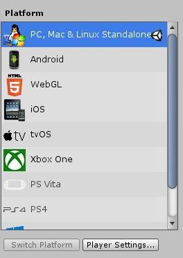
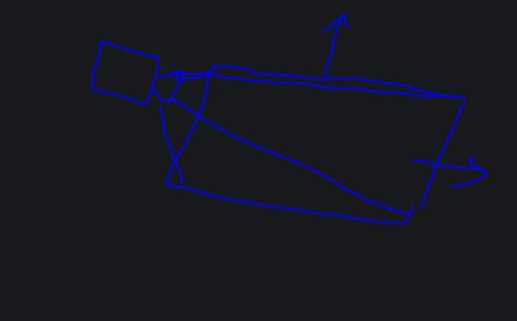
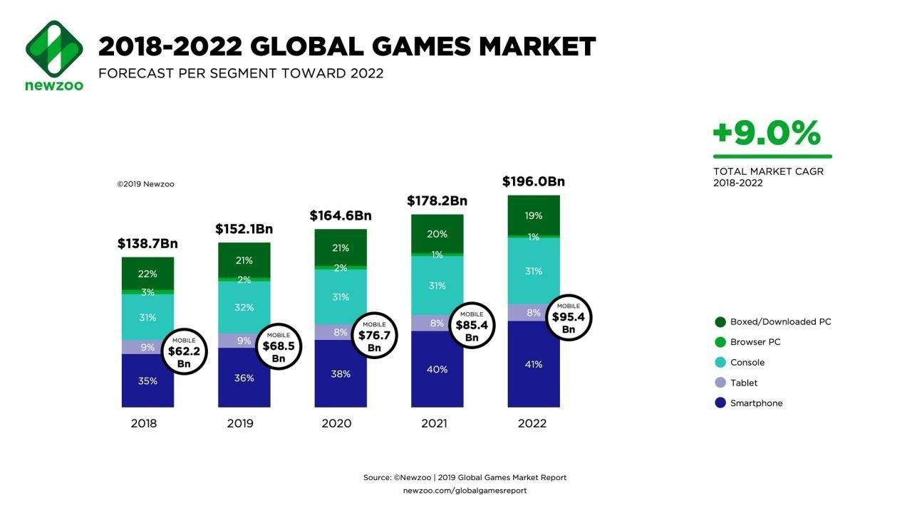
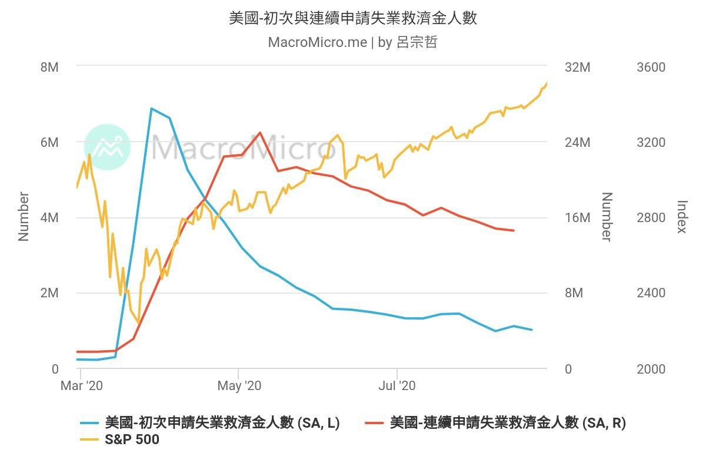

股癌美股夜貓仔精華
本書節選了「股癌美股夜貓仔」Telegram 討論區中，個人認為值得注意的討論串。
本書網址：https://www.slmt.tw/gooaye-usa-highlights/
原始碼網址：https://github.com/SLMT/gooaye-usa-highlights
開啟目錄
注意畫面左側有目錄，但若使用行動裝置可能會因為畫面太小而收起來。 想要打開請按畫面左上角之中最左邊的按鈕。
討論串以主題的方式分類，並依照發生的時間點放在各週的章節內。
漏了甚麼？
最近越來越沒空看大家的討論，討論區也越來越多人，很難全部追蹤發生甚麼事情。 如果我有漏掉甚麼，大家又希望我收錄的話，請隨時在 Telegram 群組用 @smallmountain 呼叫我，請我收錄某些特定討論串。 如果我評估後覺得符合我收錄標準的話，就會加入這份筆記中~
有問題？
有任何問題歡迎有 GitHub 帳號的人在此 repository 的 issue 處發問，或者在股癌的美股 Telegram 群組以 @smallmountain 呼叫我~
節選方式
目前是以我個人的喜好選擇內容，尚未有固定的選擇規則。
若認為有該收錄的討論沒被收錄到，也可以在 issue 處詢問或者直接在 Telegram 上找我~
置頂精華
每日一問
來源：https://t.me/GooayeUSA/122293
美股券商
- 25000門檻 : 嘉信、IB
- 無門檻 : FT、TD、ETORO
帳號
- 主委ETORO帳號不公開
- 明燈LOVE GG帳號不公開
盤前盤後哪裡看
- Investing
- 富途牛牛
XXX可以買嗎
爽買就買、爽空就空
XXX價格會太高嗎
各位韭菜沒資格評論股價
XXX公司的代號是多少？
你的瀏覽器壞掉了嗎？為什麼不先Google
Telegram 使用教學
原文：https://t.me/GooayeUSA/110238
感謝 13 大大提供
- 本群組有一分鐘一則訊息限制
- 自己的訊息打錯可以長按選 Edit 修改內容。修改不受上述限制
- 看到別人的訊息想要存下來，可以長按然後 Copy Link，或是 Forward 到 Save Messages
- 提到股票代號時可以加個 $ 讓其他人可直接點擊搜尋，例如 $AAPL
- 把訊息往左滑可以回覆該則訊息，或長按選 Reply
- 傳送圖片的時候可以同時附上文字說明，不然圖片跟訊息分兩則就得間隔一分鐘
- TG 的中文搜尋頗差，發訊用 hashtag 以後比較好找，例如 #匯款
常用網站連結
時事分析與投資標的分享
股癌官網
不解釋
財經 M 平方
https://www.macromicro.me/macro
M 大的財經情報分析
美股軍師
美股軍師的個人買賣經驗分享
綠角財經筆記
http://greenhornfinancefootnote.blogspot.com/
綠角的投資相關分享
股癌大分享
股癌書單
群友筆記
Medium - 就是筆記
https://medium.com/%E5%B0%B1%E6%98%AF%E7%AD%86%E8%A8%98
紀錄 Dong Darren 聽股癌與財報狗 Podcast 的筆記
Google Sheet - 股癌美股夜貓仔共筆
https://docs.google.com/spreadsheets/d/1rdNe1pg_2MdNL8BsfhE3ZpYIjFAKN2RnLmKwmpQxrzI/edit#gid=0
由股癌討論區上的眾人合力撰寫的筆記
Google Sheet - ARK 交易紀錄
https://docs.google.com/spreadsheets/d/1BaEvPobN-sftnTMSd_XzVdWQPBkKgCCMmodqLnVeWME
由 Mick 大整理的 ARK 近期交易紀錄。
來源：https://t.me/GooayeUSA/126097
其他
財報公佈時程
https://www.earningswhispers.com
提供財報公佈時程等資訊
股票研究軟體
Datanyze - Market Share
https://www.datanyze.com/market-share
提供各公司市場佔額的資訊
J 是啥？
本篇文章整理了 Telegram 討論群上常被詢問是啥的東西
富途牛牛

來源：https://t.me/GooayeUSA/159363
2020 年第 41 週 (10/5~10/11)
本週收錄
停利飆股方式分享
原討論串開頭：https://t.me/GooayeUSA/187586
U t, [09.10.20 00:36]
想問大家對於SaaS這種飆漲的股票 獲利超過50%的 需要怎麼做停利策略呢
CT, [09.10.20 00:55]
分享我的做法，超過20%之後，每漲10%我就賣一點，賣到一個比例之後就不理它了（小於5%總資金）
家裡蹲 機電實業, [09.10.20 00:57]
這個方法不錯 我也是這樣操作除了一些長持的就買了後就忘記。
MK H, [09.10.20 01:00]
很不錯的方法，我是都會留個幾股作紀念
PTON
原討論串開頭：https://t.me/GooayeUSA/190341
Michael Pan, [10.10.20 03:39]
想請問比較熟悉美股的大大對於pton的看法
MichelleCheng, [10.10.20 03:40]
Pton我也在看 昨天休息沒入手今天就又發動了，好難追😂
Fang Eric, [10.10.20 03:41]
非常看好，大部分建倉在60 陸續慢慢加倉。雖然要小心來自apple fitness跟最近lululemon的mirror的競爭，但訂閱收入ARR guidance持續向上，客戶黏著率也非常誇張，加上冬季疫情導致美國實體健身房要開的機率非常小.....最近幾季財報都將精采可期；跟Tesla一樣，它在同產業不是賣飛輪車的公司，是一家軟體科技公司。美國飛輪人口超多，預期PTON大殺四方後就算疫情緩解，傳統健身房的團體飛輪課也很難推了....
天生我毒好冇用, [10.10.20 03:49]
我75左右第1次入場...然後95的時候賣了...89又重新入場98又賣了...最後就是97又再買回來.....其實一直抱住就行....
gugu, [10.10.20 03:50]
千金難買早知道
天生我毒好冇用, [10.10.20 03:53]
但賺最多就是pton 跟nvda....tsla 雖然佔最多反而賺比較少....
Ryker, [10.10.20 03:57]
真的...最近漲個不停我超抖
Michael Pan, [10.10.20 03:57]
謝謝大大～ 但感覺他的技術和商業模式門檻不高，護城河會不會不夠深啊
天生我毒好冇用, [10.10.20 03:58]
pton 的社團已經像是一種宗教XD
大俠愛吃漢堡包, [10.10.20 04:11]
我分批買pton 目前+18% 感恩感恩
GL, [10.10.20 04:12]

老婆帳戶(DDOG/FSLY)小爆發~Friday nite吃肉! 這個兩個月家裡現金部位從 9% 到 18% 保守一點度過大選前, 這周自己有點 FOMO, 丟了點 GOOGL, CRWD, CHGG, 還是覺得現金部位太高 ~ 最近在看 PTON, 希望有機會買點車票, 不過覺得這麼貴的東西怎麼美國人這麼愛, 果然美國人很會花錢~
GL, [10.10.20 04:21]
我從股價4x左右知道 pton, 不理解這麼貴桑桑的東西怎麼可能賣太多, 後來老婆說他200磅的大隻佬同事買了很喜歡, 騎起來也很安靜, 美國這邊是有疫情 不過每一州情形又不太一樣, 還在研究這東西真的有這麼好嗎 ... 不過反正股價是說這東西很讚 ~
Adam Yen, [10.10.20 04:26]
科技島讀去年跟今年寫過幾篇文章分析PTON的商業模式跟護城河； 我看完以後開始買PTON，當時是$36，然後一路加碼到$66，最近一個月爆噴，昨天又加了一些在$118；
有看到一些討論，把PTON比喻成健身界的iphone，ZWIFT則是android ； 以健身產業來說，PTON應該已經有很強的護城河，只是受惠於疫情所以今年衝超快
Leroy, [10.10.20 05:34]
Pton不熟，請問這家公司股價為何有辦法一直升？
Square Li, [10.10.20 07:09]
趨勢對，加上疫情加速滲透率，硬體，軟體，內容，銷售全部自己做的商業模式，創造很好的用戶體驗，使得護城河很廣，最近推出平價版，更多人會買
2020 年第 39 週 (9/21~9/27)
本週收錄
Unity 遊戲引擎優勢
原討論串開頭：https://t.me/GooayeUSA/153617
Tian, [22.09.20 09:44]
想請教各位對UNITY 的看法
我看各大遊戲商基本上都有自己的遊戲引擎，而且遠強於UNITY
UNITY 比較像是低門檻的選擇，且目前來看多數偏向小品遊戲 要做到大作規模也是有點難度看到ARKW 有買，好奇想問一下大家的看法
Miula, [22.09.20 09:47]
並沒有，基本上unity幾乎是大多數廠商都願意選用的引擎選擇
Lza _TW, [22.09.20 09:48]
行動平台上絕大多數是unity(簡單至瑪里歐跑酷、卡牌的爐石、MOBA的傳說對決、複雜到崩崩崩、明日方舟等)，而你拿手機遊戲營收抽成去跟大作比較，經典案例就是PAD跟怪物彈珠這種量級的，有可以單月可以跟大工作室單季營收對拚
Miula, [22.09.20 09:48]
除了所謂的AAA大作，或者是特定遊戲類型，Unity 引擎的泛用性是很強的
Lza _TW, [22.09.20 09:49]
他可以輕鬆跨平台
Miula, [22.09.20 09:50]
手機遊戲中，Unity引擎市佔率約七成
Tian, [22.09.20 09:50]
以目前遊戲引擎來看，除了大廠用自家的引擎外 基本上都是選擇UNITY嗎?
J, [22.09.20 09:51]
印象動森也是有用到
Tian, [22.09.20 09:51]
可能我知道的的遊戲都是比較小品一點的 手游部分接觸的少，不知道UNITY 也通用
Lza _TW, [22.09.20 09:51]
Unreal有後來居上，少數廠商會使用cococs2，還有一些小引擎
Tian, [22.09.20 09:52]
Unreal 我自己是把它擺在大作等級的引擎
Lza _TW, [22.09.20 09:53]

unity的build settings
Miula, [22.09.20 09:53]
Unreal 比 Unity 難用很多，除非你真的想開發超級大作，否則 Unity 是首選
Yaoooo, [22.09.20 09:54]
我比較好奇你怎麼得出Unity是低門檻選擇的結論的
Tian, [22.09.20 09:55]
應該說 我知道的都是小品遊戲，所以認為應該是相對門檻低 大家才會都選擇他
Miula, [22.09.20 09:55]
我覺得他誤會比較大是以為遊戲廠商都有自己引擎，事實上大多數遊戲廠商現在都不開發自己引擎的比較多，比較會作一些專屬工具就是了
Wind Lu, [22.09.20 09:56]
很多賺錢的手遊都是用unity 的阿 譬如fgo
NVDA FANBOY, [22.09.20 09:57]

自己用過unity的心得 UNITY只要不要拿來用很吃光影的東西 其實都很好做
他本身也像是在玩遊戲一樣
例如你要做個2d遊戲 還是可以用他3D做
就只是視角鎖在一個版上而已 然後塞物件寫CODE
上手很直觀要拿他跟UE比 我覺得除了光影輸爆之外
好像都還好 剩下的問題是 要花多久才能追到UE光影的車尾燈XD
Alan, [22.09.20 09:57]
以遊戲從業人的角度來看
Unity是目前最主流的PC 手機端的遊戲引擎，性能比較平衡，效能不用很厲害的人來優化也可以在手機上流暢運行
Unreal畫質跟表現最好，但是優化不好做，通常要求客戶端的設備非常好或是開發商願意花大成本去做優化，不然手機上很難跑得動，除非是像ncsoft這種超大型公司願意花大錢去做優化，不然基本不會拿來作手機遊戲
unity上市的話 股價穩定 確定好價錢之後應該會買一點來看看
Miula, [22.09.20 09:58]
我以遊戲產業出身的立場說，其實 Unity 引擎一點都不弱，是非常厲害的引擎
Tian, [22.09.20 09:59]
如果UNITY這麼厲害的話，那他的弱勢再哪?
Miula, [22.09.20 09:59]
作 AAA 大作的畫質不夠好
彩色貓, [22.09.20 09:59]
光影效果輸unreal
NVDA FANBOY, [22.09.20 10:00]
我只知道光影渲染很爛 仙劍6就是用 UNITY做的 被靠北到爆XD
彩色貓, [22.09.20 10:00]
但是實際上 你光看教程就知道針對unreal的超少 unity一堆~ 入們難易程度有差 應用性也是unity很高
Alan, [22.09.20 10:00]
想做大做的公司有的是錢跟人力，會直接選畫質超猛的Unreal或是自製引擎
遊戲引擎講到底是給一般小公司小團隊開發用的，嗚嗚嗚嗚嗚嗚
Tian, [22.09.20 10:01]
查了一下，真的很醜 XDD
NVDA FANBOY, [22.09.20 10:01]
但同樣也是UNITY做的 爐石就很猛 就不要去曝短應該都還好
Wind Lu, [22.09.20 10:01]
不過也夠了阿 我剛查他授權是買斷制的 所以大公司小公司對他來說差異應該還好
Miula, [22.09.20 10:01]
Unity 的渲染能力其實在手機上綽綽有餘了啦
Chen Jacky, [22.09.20 10:01]
台灣幾乎沒人在用 Unreal，所以相關的中文資源少
Alan, [22.09.20 10:02]
Unity像是一台性能不錯，好上手的快艇
Unreal像是一台功能很多，但是非常複雜的主力戰艦
Miula, [22.09.20 10:02]
Unity 是賣 seat + 服務抽成 ........不是買斷制
peter, [22.09.20 10:02]
unity的開發人員還是比較多
丟高 喔, [22.09.20 10:03]
仙劍的例子不好，因為是團隊不會用
彩色貓, [22.09.20 10:03]
unreal和unity 最近有另一塊除了遊戲外的應用 建築可視化設計
Alan, [22.09.20 10:04]
Unity在手機上真的好棒棒，畫質符合需求，效能又很好
當年我老闆真的是頭撞到才拿unreal做手機MMORPG XDDDD
Chen Jacky, [22.09.20 10:04]
Unity 的學習曲線與進入的門檻較低，開發人員多，團隊招募上較容易
Wind Lu, [22.09.20 10:04]
有成ˊ功嗎
Alan, [22.09.20 10:05]
公司收掉了，資遣費跟最後幾個月薪水還沒給我030
不過我們一年還是會出來吃飯幾次拉XD
Miula, [22.09.20 10:06]
根據 Unity 的 S1 文件，目前蘋果與安卓手機遊戲排行榜前 100 名有六成以上是用 Unity 作的，這樣應該很成功吧?
Lza _TW, [22.09.20 10:06]
Unreal以前的收費機制比較不友善，不過近期有被unity逼到100萬美門檻，只是社群生態已經跟unity差一截了，不過他自家Epic平台抽成有大福利
Miula, [22.09.20 10:07]
Unity 的收費機制我覺得也比較好
Tian, [22.09.20 10:08]
如果回歸股票來說，UNITY 大家認為是可以持續成長的公司，還是遊戲市場就這麼大 成長有限
Wind Lu, [22.09.20 10:09]
遊戲市場一直在變大喔
Chen Jacky, [22.09.20 10:09]
我覺得兩家都是很成功的公司啦，Unity 在行動裝置上很成功，Unreal 則是除了行動裝置外都很成功，包含被拿去做電影的 Previs 或是畫質比較一般的動畫, 室內設計/AR/VR/MR
Tian, [22.09.20 10:10]

Chen Jacky, [22.09.20 10:13]
去比一下雙 U 的營收會比較有依據
Tian, [22.09.20 10:14]
為什麼大家都拿UNREAL 去比 UNITY? 感覺兩個是不同需求的選擇
Miula, [22.09.20 10:15]
我也覺得不用比，各作各的生意
Chen Jacky, [22.09.20 10:15]
因為兩家都是做遊戲引擎的，所以會被拿來比較也很合理。不過兩家互相在攻佔對方的領土也是事實。
Chen Jacky, [22.09.20 10:17]
這對開發者是好事，不然以前 Unreal 獨佔的時候授權費很貴的呀！而且沒什麼選擇
Tian, [22.09.20 10:18]
所以除了UNREAL 外 其他大廠引擎是沒有開放使用的嗎? SOURSE 寒霜 之類的
Chen Jacky, [22.09.20 10:18]
曾經 CryEngine 想挑戰 Unreal ，但失敗了，最後好像被 Amazon 收購變 Lambyard ? ( 不太記得了 )
Eason Lu, [22.09.20 10:18]
大概是檯面上代理商太多 ... 自製的也沒什麼起色 (反而有些沒上市的公司/工作室用Unity闖出名堂 , 公司規模變大開始轉用 Unreal 做圓夢大作?
Roger Chan, [22.09.20 10:18]
怎麼說是不同需求呢？
我覺得有一定程度的業務重疊啊？
Alan, [22.09.20 10:19]
需求真的不一樣 簡單從畫面表現來分 低一點是Unity 高就是Unreal 重疊的部分蠻小的
Tian, [22.09.20 10:19]
我的理解也是這樣
Chen Jacky, [22.09.20 10:19]
遊戲引擎要能被人接受沒那麼容易的，不是 Open Source 就有人要用，主要還是遊戲製程啊，換引擎也沒那麼容易，換引擎 = 換製程
RJ C, [22.09.20 10:20]
粗略一點分是這樣沒錯
Unity另外是使用上比較友善
Eason Lu, [22.09.20 10:21]
有段黑歷史 ...某上市公司買Unreal授權 , 後來各種因素團隊捨棄它 , 改用Unity開發 , 可見也是有學習難度
Alan, [22.09.20 10:21]
我是覺的大公司的自製引擎應該是覺得自己的很屌 才不要給別人用XDDDD
如果自己公司做的不好用就是找一般的商用遊戲引擎 就不會用自製引擎了
Wind Lu, [22.09.20 10:22]
如果介面沒做好 要讓別人學會如何用很花時間 所以不一定會想釋放出去
Chen Jacky, [22.09.20 10:22]
自製引擎適合自用，不見得適合商業使用，商業使用的話，程式碼的架構、元件的設計、工具、文件、售後服務…等都要考慮進去
Roger Chan, [22.09.20 10:22]
我指的重疊是在手機市場上的部分 這不也是最近Unity最近熱門的原因之一嗎
Lza _TW, [22.09.20 10:22]
一般大工作室自製引擎多半是為了某些超強大作設計的，就算開出來給別人用，別的團隊也不見得好上手，其實就算是unity/unreal，很多團隊也能魔改很多機能
Yaoooo, [22.09.20 10:23]
看用途 有的引擎開發出來是為了做遊戲 有的引擎做出來是為了賣給人家做遊戲
Alan, [22.09.20 10:23]
想在手機上用Unreal就是想不開 除非開發公司超有錢做優化 不然根本跑不動= ="
RJ C, [22.09.20 10:24]
依我的經驗來說 商用引擎跟一般開發對使用者來說是有很大的距離 公司可以自己做引擎開發但是要拿出來給大家都能用那是另一門功夫
Wind Lu, [22.09.20 10:25]
死亡擱淺拿地平線的引擎 對方好像提供source code 給小島團隊改
Chen Jacky, [22.09.20 10:25]
一般自製引擎是為了某種特定類型打造的，商業應用的泛用性要高 手機上也是有用 Unreal 成功的，比如 PUBG-M, NC 系列的或是 Epic 自己開發的 Fornite，但門檻不低是事實
RJ C, [22.09.20 10:25]
不完全是這樣 不管你用哪一套引擎在哪個平台開發都是需要優化 還是要看專案的內容和規模
Roger Chan, [22.09.20 10:26]
Apple Arcade 上的 海之號角2 就是Unreal產物啊
мика, [22.09.20 10:26]
Unreal有給Source Code, 你規模夠大可以請Epic的人到公司教你改
Chen Jacky, [22.09.20 10:26]
用 Unity 在手機上也有畫質好的，像 shadow legend, 不過一定都是投入大量的研發資源才能做到，不見得會比 Unreal 的研發資源少
RJ C, [22.09.20 10:26]
沒錯 不過原本PUBG和Fornite就很成功了 手機只是順便 XD
Alan, [22.09.20 10:27]
我是指優化成本不一樣 unity基本低消低很多 unreal很吃資源 不是做不到 是成本不一樣 成本夠就可以考慮選unreal 成本不夠unreal就不會是選項
RJ C, [22.09.20 10:27]
嗯啊 基本上有錢還是比較重要
RJ C, [22.09.20 10:29]
我了解你的意思 不過我兩個都用過 現在就是用unreal開發 我指的是當你的專案需求到那邊 那些成本都是要的 不光只是引擎上的使用成本 整體專案開發上的成本都是會被拉高 用什麼引擎沒有絕對 還是看專案需求和使用習慣
Roger Chan, [22.09.20 10:29]
對啊目前我看手機遊戲大宗是這兩個引擎 才會說這重疊的部分 是存在的 跑跑卡丁車好像是Unity 海之號角2是Unreal 隨便舉個例 只是不知道彼此佔總營收多少就是了，提供參考
RJ C, [22.09.20 10:30]
那是因為這兩款是資源最多的免費商用引擎
Tian, [22.09.20 10:30]
所以用什麼引擎 成本不會是最先考量的是嗎?
Chen Jacky, [22.09.20 10:31]
不過我相信用 Unity 做失敗或是倒掉的也不少
RJ C, [22.09.20 10:31]
就算你爆幹有錢 開發永遠都是成本第一 XDD
RJ C, [22.09.20 10:32]
哈哈哈 成功或失敗都不是引擎的問題 開發遊戲要成功跟新藥研發差不多概念 成功機率高一點吧 XDDD
John Doe, [22.09.20 10:32]
應該是 成本 開發速度 效率 做比較，成本永遠權重都很高
Alan, [22.09.20 10:32]
窮到連鬼都懶得抓你 成本就會是你的唯一考量(誤
Kazami Hsieh, [22.09.20 10:33]
軟體的成功機率應該比新藥好一點了
Tian, [22.09.20 10:33]
假如我現在要做一款新的遊戲，沒有用過這兩款引擎 那公司會怎麼決定要用哪款引擎?
RJ C, [22.09.20 10:33]
我只能說成本包括很多部分 不單只是看引擎
tony yang, [22.09.20 10:33]
unreal 真的很強,強到可以做特效,更猛的是 render real-time,星際大戰：曼達洛人影集就是靠他的即時運算做的,減少render時間
Alan, [22.09.20 10:34]
如果可以選我也想用unreal 除了優化以外 用起來真的好爽QQ
獨釣老翁, [22.09.20 10:34]
看要開發的遊戲類型
RJ C, [22.09.20 10:34]
事情沒有這麼單純囉 厲害的人unity一樣可以做得很好
Chen Jacky, [22.09.20 10:34]
使用引擎是一個選擇，但你說用什麼引擎就保証成功，我覺得這是無稽之談，把產品的失敗怪到引擎上，那是過度簡化了整個流程
RJ C, [22.09.20 10:35]
- 看人員的使用狀況 學習成本都要考量進去
- 看專案類型和內容的考量
- 看主事者想怎樣 XDD
RJ C, [22.09.20 10:36]
大抵上來說 unity會簡單一些 C#學習門檻低一點 不過這只是大方向
Chen Jacky, [22.09.20 10:40]
台灣引擎人才不多，用 Unreal 也只能做出 Unity 的畫質，甚至很多團隊連 Unity 都駕馭不了，所以在台灣應該還是選擇用 Unity 比較現實
獨釣老翁, [22.09.20 10:41]
我是用UE4 還是要看你想開發的遊戲類型，引擎只是工具
獨釣老翁, [22.09.20 10:42]
不過如果是說教學資源unity是真的壓倒性的多
RJ C, [22.09.20 10:44] [In reply to Chen Jacky]
結論我覺得稍微有點武斷
台灣開發者其實很多很不錯的
問題在有沒有時間累積經驗和透過嘗試、堆疊失敗去升級
沒做過永遠不會知道碰到問題有多複雜和困難
這和用什麼引擎還是沒有絕對關係
說到底還是有沒有老闆願意燒錢養人不過unity相較於unreal還是比較友善一點
這點是無庸置疑 XD
peter, [22.09.20 10:49]
身為一個曾經唾棄unity,用openframework 去硬幹的互動工程師的感想，unity還是很好用的...........
FT 轉 TD
原討論串開頭：https://t.me/GooayeUSA/157142
Eric Chuang, [24.09.20 00:51]
關於FT 轉 TD，有這樣計畫的朋友請參考：
8/25把六月份以前在FT買的股票轉到TD
9/21在TD收到了RDS.B的股息，只有收到在TD買的
9/22正在納悶時，在FT的帳戶看到了，但是因為已經被關閉了，也無法轉到我的美國銀行
9/23正想要打電話去FT了解，登進去帳號看一下號碼，發現錢被轉出了，然後我就在TD看到了很神奇的自動化機制，美國券商間的設計真好
TC Chan, [24.09.20 00:53]
稍等立刻做功課，想請問這兩家可以無痛轉移嗎？謝謝🙏
Eric Chuang, [24.09.20 00:54]
無痛喔，表格填填就好，一週內就完成了
TC Chan, [24.09.20 00:54]
感謝你！突然安心多了
Eric Chuang, [24.09.20 00:55]
連轉完後面發股息都記得幫我轉了，很安心啊
Joyce 大分享 RDS 經驗
原討論串開頭：https://t.me/GooayeUSA/161038
gugu, [25.09.20 23:48]
請問大家 會因為
已經 盤算好的買點 和賣點 沒有買 賣到
得失心 重
感覺天空很灰藍嗎？
Joyce Tsai, [25.09.20 23:55]
你覺得灰灰的就來找大夥取暖，我可以再貼我的RDS給你看，你會頓時豁然開朗
gugu, [25.09.20 23:57]
RDS是什麼？
Joyce Tsai, [25.09.20 23:59]
來來來⋯
Wind Lu, [26.09.20 00:00]
小輸我之前的uso
Joyce Tsai, [26.09.20 00:00]
我不想贏這種⋯⋯
Wind Lu, [26.09.20 00:03]
我之前在谷底認賠。 然後就不太買自己不懂的東西。 之前買的時候沒搞懂他的機制。 只覺得很便宜
Joyce Tsai, [26.09.20 00:09]
這也是種幸運，賠過大錢才有更深的體悟，而且你有本錢賠大錢也是種幸福。Shell我跟它有四年的感情，唉丟卡慘兮，而它還是有讓我繼續留著的理由，我真把它當定存，每年3%還是能接受
Wind Lu, [26.09.20 00:17]
那一陣子波動很大。 所以壓力也不小只好清空，還好前一陣子美股狂漲賺回了虧掉的錢。
Joyce Tsai, [26.09.20 01:04]
👍 厲害，這就成功了😊 果然有風
其實我所有投資都還不錯，就這個最慘，但因為投資標的很分散，所以對單一標的風險承受度非常高，每天還是可以睡很好（所以各位癌友，主委跟M大的話要聽！分散不要亂all in）而且我覺得有個坑在那裡會讓你比較積極地去經營主動投資的部分，所以我現在整體投資組合還是正的。所謂失敗為成功之母，RDS就是我老母。我10年前還在一檔做過假賬的陸資Nasdaq ADR公司賠了兩萬美金，也是要花點力氣把賠的賺回來，這筆算我祖母
賠過大錢會非常認同巴爺爺的最高原則- 不要賠錢，而諷刺的是，人都是要賠過才真知道怎麼不再賠。所以，年輕的時候多犯錯多賠點沒關係，因為你還有時間賺回來，不要失心瘋就好
LIN, [26.09.20 01:26]
RDSB算是賠錢嗎？當初買的時候不就看好未來兩年以後了...？
Joyce Tsai, [26.09.20 01:29]
當初買從不是為了價差，如果只是為了價差我早跑了，這麼穩的公司沒想到會崩，所以根本措手不及。嚴格說我沒賣是真的沒賠也沒錯，但市場的價格就放在那裡給你看，還是要認的
比翁阿爾米斯, [26.09.20 01:32]
可是面對一直隕落 其實心裏怎麽想 像是三月的時候 是當教訓 在哪裏一直告誡自己嗎？像大大們都説過 認錯砍了 把錢在投資別的> 標 不會是讓錢從新活動嗎？我只是小菜雞 純粹真的好奇想問你這件事 謝謝你哦
Joyce Tsai, [26.09.20 01:38]
我第一件去確認的事，就是這間公司會不會倒，所以我第一次認真看它們的年報跟季報就是在三月底四月初崩盤時。看完確認真的不大可能倒後，就轉移注意力去看其他標的了。這一路沒什麼很大的心情起伏，頗冷血。不過我覺得這是因為我這些錢都不會影響我家的生計，給了我有理性冷血的本錢
比翁阿爾米斯, [26.09.20 01:40]
非常謝謝你的回應 受教受教
Joyce Tsai, [26.09.20 01:46]
不用那麼客氣😄 多少有點職業病，我做財務時都是處理很棘手的事，而且讀財報抓重點很快，比較能評斷一間公司財務體質的好壞，這對信仰有很大的加持作用。我覺得大家是真的可以考慮去上點基礎財務課，作為輔助工具
2020 年第 38 週 (9/14~9/20)
本週收錄
HON
原討論串開頭：https://t.me/GooayeUSA/138677
Tako Tsai, [14.09.20 03:28]
美西的空氣污染很嚴重 有人有推薦的空氣清淨機的標的嗎？
水牛城土狗, [14.09.20 03:30]
$HON Honeywell 什麼都賣，什麼都不奇怪。
Winnie Shih, [14.09.20 03:34]
Honeywell也接了美國軍方不少案子，之前朋友的老公就在Honeywell 工作，做的就是跟軍方相關的案子，還有一些美國公寓的空調系統也都是用Honeywell
C L, [14.09.20 09:26]
Honeywell在航太產業重要性不可言喻 飛機上不少高單價零組件都是他們家的 不知道疫情影響如何...
Edward Tsai, [14.09.20 10:54]
Honeywell真的是很神奇的公司，售後服務超級爛，每年Boeing都會請各航空公司對各供應商做顧客滿意度調查，最後一名的一定是Honeywell 可是他東西還是賣得很好
☆:.｡.㊣菜雞豬是會射㊣.｡. :☆, [14.09.20 10:55]
我覺得空氣清淨機不錯 就是耗材好貴
NVDIA 拿下 ARM 對 Intel 影響
原討論串開頭：https://t.me/GooayeUSA/141933
SamLin YSL, [15.09.20 21:58]
NVIDIA 拿下 Arm ，蘋果與高通或許有點介意，但受傷的可能是英特爾
繼續閱讀: http://technews.tw/?p=646854
-分享自 科技新報 App
John Wang, [15.09.20 22:22]

不是可能受傷
是一定受傷兩個月前我做了一張圖
TSMC跟Intel的市值比較圖
今年五月以前兩家市值差不多
但是7月底台積電連續兩天跳空
同時間Intel大跌
可從圖看到台積電市值已經大幅超越
且是Intel的兩倍左右市場已經告訴我們答案
誰是半導體界的新霸主
過去Intel稱霸幾十年
接下來要換人了
而且不是短期現象
我是看很長期樂觀看待好幾年前台積電在28奈米大舉投資跟擴廠
就此甩開競爭對手並拉近第一名的距離
到現在台積電再度大舉投資跟擴廠
已經預告未來在我眼中Intel是家好公司
有非常好的設計跟研發能力
但是我一股都不想持有
買了一堆TSM大聯盟真心希望Intel製程良率不要卡關太久
如果我是Intel CEO
我會把製造部門關掉
轉型為IC design house
影像辨識 vs Lidar
原討論串開頭：https://t.me/GooayeUSA/142448
Steve 🌰, [16.09.20 00:13]
反向思考一下 如果現在的油車大廠在電動車領域幾乎都看不到特斯拉的車尾燈
那它最有可能的對手 會不會是google的無人駕駛技術LV5技術合作傳統車廠？
神仙聯合把特斯拉拉下來
Huang Huniiiiiii, [16.09.20 00:16]
傳統車廠的員工會抗拒變革 兩個都是車 可是油車跟電車差滿多的
Steve 🌰, [16.09.20 00:21]
我以為ｗａｙｍｏ 是直接走無人駕駛 不是特斯拉這種狀況 我想像的一個劇本是 在小規模地方如廠區或者大型倉儲先試用 可行後再漸漸普及到多數馬路 像是３Ｄ高架這樣 連馬路都一起更新 不曉得這樣劇本會需要多久
Miula, [16.09.20 00:30]
waymo 是直攻LV4-5 但現在數據量已經被TESLA海放
Steve 🌰, [16.09.20 00:31]
原來．．．．是因為ｔｅｓｌａ已經有很多在路上跑 ｗａｙｍｏ一直無法確實量產嗎？
Miula, [16.09.20 00:32]
WAYMO 有在幾個地區跑啊，但現在數據量被TSLA海放不到百分之一
мика, [16.09.20 00:32]
Waymo有遇到瓶頸了，還是要回來跑影像數據，非Tesla陣營我反而比較看好 Mobileye 的方案，影像優先+之後光達輔助，而且已經有跟車廠合作商業化了，不像Waymo還是實驗中的數據，不過被Intel買走了，無法直接投資。
Miula, [16.09.20 00:33]
影像優先本來就是正確的方向，Lidar 我覺得可有可無，沒那麼重要，一堆人扯的 5G 數據互聯更是十年後才能成真的事情。但 其實光靠影像就非常夠了。
JM Huang, [16.09.20 09:05]
剛好看到忍不住想回, lidar 不會可有可無, 未來十幾年內應該還是lidar+影像整合, 只是lidar進步空間還不如影像,
lidar 只能做偵測物體的距離, 但是他的有效偵測距離比較遠, 感測器輸出的數據就直接是距離值, 影像要測距還要搞一堆算法, 所以lidar的反應時間比較快,
影像雖然甚麼都可以做(包括行人行車路標辨識, 測距), 但是他的算力要求很高, 有效距離不如lidar, 或說有效距離要達到如lidar一樣, 影像解析度要很高(算力需求又要再更高) 還要加上車用的情境下又要求反應時間需要夠短, 所以不太可能不需要lidar
也正因為算力需求高, 才會有人想說5G能不能實現滿足即時要求下進行雲端運算
Ken Chen, [16.09.20 09:30]
同意。影像要做到準至少還要3~5年，要準到可以完全依賴真的十年都有可能
Miula, [16.09.20 10:05]
汽車沒有算力問題啊，電力跟空間都很大，裝得下很強算力的機器，TSLA 都開發專用晶片了
Alan, [16.09.20 10:08]
5G普及之後算力就不是問題了 或是拿車廂放電腦 直接放一台大的XD
JM Huang, [16.09.20 10:11]
就成本高 可靠度低
SugatRnko, [16.09.20 10:11]
怎麼想都覺得Lidar的進步空間相對有限
Yaoooo, [16.09.20 10:11]
5G普及我怕都在玩7G了
CY L, [16.09.20 10:12]
我自己感覺Lidar比較可行的方式是等到硬體成本降低（記得Lidar目前成本相對高更多？）加上去輔助用的
pizza LAI, [16.09.20 10:13]
lidar是用在行動裝置吧 ar眼鏡什麼的
JM Huang, [16.09.20 10:16]
Lidar 進步的空間應該就在於製作成本，3D lidar 目前一顆要百萬
Peter Chang, [16.09.20 11:01]
Waymo Uber, cruise 還有很多公司據我所知都是以lidar為主, 我並不覺得以vision 優先ㄧ定是正確的, 自動駕駛賽道 tesla目前領先 不一定是他走到最後, 未來lidar價格若是下降就可能是一個game changer
george, [16.09.20 11:28]
推一個 Lidar在測距上的地位真的還是滿難用影像取代，而且我認為就算力而言，可以處理影像轉3D的算力，來用Lidar算點雲是綽綽有餘
未來應該還是工具箱模式做自駕吧 甚麼數據都收來算這樣XDDDD
Peter Chang, [16.09.20 11:37]
但是算力便宜 而且camera 可靠又便宜， 若是以lidar+影像 融合vs 雙目 以目前的技術來說 算力都絕對夠吧，我覺得很難用算力當做無法取代的理由
Wind Lu, [16.09.20 11:39]
主要差別是視線不好/天氣狀況不好時 誰的表現比較好 目前影像就是要靠算力來支撐
Miula, [16.09.20 11:40]
在各家自架方案中，Lidar 應該都只是輔助的角色，不是主角
Peter Chang, [16.09.20 11:41]
No, waymo lidar 絕對是主角 當然這是我自己從公開的資料中的猜測
Wind Lu, [16.09.20 11:43]
目前tsla 看起來是加強的他晶片運算能力，所以應該還是沒打算用Lidar ‧如果算力能協同所有攝影機，演算法也有辦法處理，可能就不太需要Lidar了。
Miula, [16.09.20 11:43]
Waymo 講的lidar,裡面就包含了大量的影像辨識了
Immelman, [16.09.20 11:45]
推一個 影像辨識的確還是有極限存在，例如我開model 3，偶爾對於陰影有誤判的情況出現，不過最近的更新似乎有改善這個情況。 未來我想重點應該會放在Sensor fusion，將影像和lider作為相互補償的機制。
Peter Chang, [16.09.20 11:51]
可能你誤解我的意思，我的意思不是waymo 不用影像而是waymo 對lidar 的依賴 就我自己的看法是不會比camera少的 所以頂多是雙主角
Lara, [16.09.20 11:53]
同意光達在測距上優勢明顯。不過之前做過汽車測距雷達的案子，前後裝 65m、邊角裝15m、側邊裝5m的雷達，感覺這種配置基本防撞也夠了，算成熟技術，很多車都是標配了，也不耗算力。我以為影像辨識主要是辨識路況、紅綠燈、障礙物，貓咪還是人類，影像測距只是輔助？
光達看不到車道線、停止線、紅綠燈顏色等等，但是可以提供更精細的環境障礙物輪廓，算是自動駕駛中比較進階的功能。
Miula, [16.09.20 11:54]
老實說這根本跟Lidar的定義不同了，這根本是以影像辨識為主的解決方案 https://technews.tw/2020/03/10/the-5th-generation-waymo-driver/
Miula, [16.09.20 11:56]
當然，，你要說這是雙技術主角我尊重你的個人意見，只是我看法不同，只有Lidar 沒有影像辨識根本無法自架，但只有影像沒有光達卻絕對可以自駕，我認為是有主配角之分的
Wind Lu, [16.09.20 11:58]
Lidar 可以讓整個系統更檢ˋ單，畢竟他需要的影像處理比較少，不過就成本太高了。
SugatRnko, [16.09.20 12:03]
若Lidar成本降到跟現階段算力成本相當的那一天，也許算力成本已經低到不像是成本了。
Peter Chang, [16.09.20 12:03]
No, camera多不代表 他是主角 可以只是他單一的覆蓋範圍小 所以要多個。 我認為單lidar or 單 camera 絕對可以自駕，只是系統可靠性的問題
Wind Lu, [16.09.20 12:06]
camera 多的好處是可以經由不同視角去擷取出更多的資訊吧
Miula, [16.09.20 12:09]
Lidar 無法辨識燈號，我不知道怎麼實現沒有鏡頭的自動駕駛
Peter Chang, [16.09.20 12:14]
好吧 你突破盲點， 我修正我的說法，我認爲以lidar 為主要技術，camera為輔助 可以實現自動駕駛。
Miula, [16.09.20 12:18]
那就看那條路線先成真囉
2020 年第 37 週 (9/07~9/13)
本週收錄
CRWD 財報分享
Telegram 連結：https://t.me/GooayeUSA/128657
【T986】美股投資客_ Jeff, [07.09.20 22:00]
CRWD此季財報文章，分享給各位參考😀
Joe Budden 宣布與 Spotify 解除合約
Telegram 連結：https://t.me/GooayeUSA/128724
Wayne, [07.09.20 23:56]
跌的時候該空嗎？
原討論串開頭：https://t.me/GooayeUSA/129483
Rave, [08.09.20 18:47]
菜雞發問，大跌時能夠放一些空單減少扣血嗎，還是既然這樣就乾脆減碼
Larry Chen, [08.09.20 18:50]
主委跟M大都建議過 除非你部位超大大到要避險 不然就是減碼即可 :)
硬頸 冰鳥, [08.09.20 18:59]
放空跟做多差很多 你放空漲多的可能一兩根就要回補甚至當天要補 不適合作為避險 還有放空風險可以是無限大無限向上嘎 避險應該不會用這種方案
硬頸 冰鳥, [08.09.20 19:04]
我只在台股放空過 美股還沒試過 不過節目有說拉 資金沒大到幾千萬幾億 不需要買避險商品 可以減碼不然你空手也好
Love GG+, [08.09.20 19:05]
我爸以前都這樣 左側買完（例如買台塑四寶） 放著一段時間才回來看xdd
雖然現在應該還不是那種崩崩的左側
Matt241, [08.09.20 19:20]
這個我在主群也問過,我是台股部分,我之前的經驗是部分空單遇到大跌是有獲利但又抱下抱上被嘎. 後來改變作法是當空單部位獲利回吐5成就平倉. 但後來群內的前輩也是建議我乾脆多單部分減碼就好. 目前操作也是多單部位減碼,沒有用空單去做平衡
A., [08.09.20 19:22]
多單跟空單有不同的慣性。如果要兩樣都作，要小心迷路，兩邊都不討好。下殺的時候，做空賺錢確實很爽，但也很容易忽略潛在性的風險。
MK H, [08.09.20 19:33]
看你空什麼，你隨便去找個股空有可能只會被雙巴
MK H, [08.09.20 19:40]
避險就幾招
減碼, VXX, 做空對應比例部位期貨
99%的人只需要做到減碼就好
MK H, [08.09.20 19:40]
若是指數配置的，連減碼都不用，你股債配置裡面的債就是這時候用的
Aaron Huang, [08.09.20 19:44]
上禮拜沒見招拆招的 這禮拜也不用買什麼 vxx or put了 大概率被收掉
Jason, [08.09.20 19:59]
不管是做多做空，連續幾天的單方向走勢一旦反轉，它的implied volatility會銳減導致價格大跌。除此之外還要小心theta decay(每日扣血量)
Slack
John Doe, [09.09.20 10:02]
slack 明明蠻多人用的 是因為免費版太好用 所以營收都拉不起來嗎？
Ting-Wei Hsu, [09.09.20 10:04]
我在美國 實驗室本來用Slack 現在學校全都改成Teams了 微軟整合到outlook更好用
John Doe, [09.09.20 10:12]

[Forwarded from IEObserve 國際經濟觀察]
作為一直沒有跟上漲勢的雲端股，Slack也公布了第二季的財報營收獲利都優於預期，全年展望也調高但盤後股價照崩18%不誤，其實相對其他估值真的飄上雲端的SaaS，Slack崩完後的估值是現在市場少見的平實
當然主要還是他跟他的對手其實沒有太大的不可取代差異，而且它的對手還免費套裝送，讓他很難有大幅成長的空間，還是一堆公司是免費仔在用
Slack Technologies二季度付費客户超過13萬家，同比增長30%；年經常性收入超過10萬美元的付費客户985家，同比增長37%；使用共享渠道的付費客户超過5.2萬户，比上季度末的4.1萬多户有所增長；超過38萬家機構使用免費或付費訂閲計劃，同比增長超200%。
群友分享部份美股今年價格重點變化
原文：https://t.me/GooayeUSA/133480
Risotto 好吃, [09.09.20 23:20]
2020 年第 36 週 (8/31~9/06)
本週收錄
- Graphcore
- 總體經濟
- 大麻股標的
- 每個人都買 S&P 500 會發生啥事？
- SHLL
- 複委託手續費
- FT 出金手續費
- ETF 避險與債券
- 電匯到國外券商
- SPOT
- 9/3 美股崩盤之鮪魚又爆炸啦
- 非農與 ADP 就業的差別
- TQQQ vs NVDA
- TSLA 拆分後分析
- 主委：VOO 沒特斯拉
Graphcore
原討論串開頭：https://t.me/GooayeUSA/110618
DY CHENG, [31.08.20 15:25]
請問一下 像Graphcore 這種產品，對NVIDIA的AI相關生意影響大嗎
CY L, [31.08.20 15:40]
跟TPU類似的產品，需要觀察長期下來的費用攤提
Preemptible gpu的費用相當便宜，而且水平部署方便
我自己是比較少用TPU類型的pod來做訓練，開起來的底價就是比較貴一點點
現在AI這塊（無論Inference or Training）還是戰國時代，NVDA / GOOG 抑或是 GraphCore應該都還在砸錢研發最有效率的硬體
DY CHENG, [31.08.20 15:44]
感謝 所謂的價格便宜是指GRAPHCORE的比NV的便宜是嗎?
CY L, [31.08.20 15:52]
硬體成本應該是：NV <<<<< GraphCore 😆
但實際使用成本會是雲端商收費（應該不會有公司自己養硬體？）
就看 Azure GraphCore / GOOG TPU vs AWS/GCloud/Azure掛多張GPU的收費標準比較了
DY CHENG, [31.08.20 15:53]
多謝👍
CY L, [31.08.20 15:58]
SRY 多補充個觀點
NVDA這邊ＡＩ的份額應該是賣給資料中心的數量（toC的份額應該可以忽略？需要看看財報）
主要就是看TPU / GraphCore能不能排擠資料中心內GPU的佔比，如果不能排擠，其實NV還是照樣爽出貨就是😂
菜雞思路，不一定正確
美股 菜菜子, [31.08.20 16:22]
這些年 data center 主流大都用 nvda 的 v100, (剛推出了 A100), 要是類似 graphcore 這種蠻整合的產品能穩定跑起來, 並把大多數流行的model (bert, restnet..etc) 穩穩支持起來, 讓軟體這邊無痛轉移的話, 是有機會打擊 NVDA的dominate market, 畢竟 NVDA 真的比較貴, 只是起步早把原本就有的 GPU 加點 tensor unit 就可以把 training 跑起來, 不過晶片這東西非常燒錢 ... TPU 做得不錯 感覺 marketing 在亂搞 ~
b, [31.08.20 18:01]
Tech Crunch - Graphcore, the AI chipmaker, raises another $150M at a $1.95B valuation
b, [31.08.20 18:02]
Anand Tech - TSMC and Graphcore Prepare for AI Acceleration on 3nm
Wind Lu, [31.08.20 18:05]
之前有家AI晶片新創公司 做了一顆chip ，大小就是一個12吋wafer，效能很強，結果只賣出兩顆晶片。 科技新報 - 新創獨角獸 Cerebras 推出 AI 單晶片超級電腦，大型 AI 學習訓練可從數月降至數分鐘
Ken Chen, [31.08.20 18:08]
這個酷！
Wind Lu, [31.08.20 18:10]
賣出兩顆 還是美國國家實驗室買的 一顆2Musd的樣子 不過他們二代改變方法了 成本應該會下降
總體經濟
原討論串開頭：https://t.me/GooayeUSA/110357
VegeChicken, [31.08.20 11:41]
雖然大家有點嗨，而且也不是很多人關心總經這塊，小菜雞還是來風險警示一下。
總經看到風險並沒辦法預料多久後會發生：
（圖一）目前初領和連續失業救助金下降趨緩，亦即勞動力水平不如疫情前，沒勞動力就沒錢就沒辦法消費（如果財政政策上沒有 support的話），以消費為主體的美國經濟將有大幅度的修正，甚至進入大衰退期。
（圖二）中大型企業對銀行貸款意願下降，可能代表 1. 企業錢多到不需要跟銀行借 2. 沒看到需求不想增資生產。美國國內銀行對於中大型企業緊縮貸款標準淨比例快速攀升，代表銀行也不願意借出資金給企業。不管如何，可以從圖看出崩跌和數值有關係，計算相關係數絕對值為 0.5，前一次數據公布時間為 2020/7/20


Amber Chen, [31.08.20 11:48]
我有疑問，初領和連續請領失業救助金人數趨緩，不是代表勞動力水準已有回升嗎？
另外從圖二看來，中大型企業貸款需求比例與疫情前相較，似乎沒有很大落差，如何看出貸款意願下降？
不好意思問題可能很菜，還在努力學習判讀圖表中
Tim Chuang, [31.08.20 11:53]
貸款的圖，感覺是中型以上公司對借貸資金需求趨緩，銀行也不打算持續放款給中型以上公司
有趣的雙向「同步」
VegeChicken, [31.08.20 11:54]
- 圖一最左邊是疫情前的狀態，趨緩代表有進步沒錯，但無法回到疫情前狀態，但現在的股市可是噴出疫情前狀態。
- 需求比例開始往下，這還沒辦法確認是否真的變差，下個季度如果更差，我會選擇大幅縮減股市的資金比例
Tim Chuang, [31.08.20 11:57]
失業救濟的圖，純粹表示請領失業救濟金人數（初領、連續領）同步減少
Amber Chen, [31.08.20 11:58]
好的，感謝回覆～
也謝謝分享，第一次知道還可以用銀行緊縮企業貸款標準的比例來觀察
大麻股標的
原討論串開頭：https://t.me/GooayeUSA/110393
Louis(應), [31.08.20 12:18]
有人買 大麻 相關美國股票嗎？
因為美國只有部分州開放大麻，看好以後全面開放的市場。
KPReal, [31.08.20 14:30]
提供一下標的給你參考 GWPH-生物製藥公司，以CBD開發的Epidiolex被FDA認證(可被醫院合法使用) CRBP-口服類大麻藥物，重點在解決炎症、硬化症…等 ACB-加拿大龍頭之一，近期收購通路Reliva想進入美國市場 APHA-加拿大公司，有在傳要跟ACB合併想統一世界 YCBD-以CBD為主的各類衍生產品 CRON-加拿大公司，多項品牌擁有者，Cove、Peace+…等等 CGC-加拿大龍頭之一，收購狗哥(snoopdogg) TLRY-醫用大麻及大麻素研究、種植、生產、分銷，一條龍公司什麼都幹。
美國目前大麻在聯邦還是違法的，所以有各州自治的法律，針對娛樂及醫療使用有不同規定，趨勢很明確是一直往開放的路線上走。
在投資上就是大家都看好，全都沒信心，股性是瘋炒瘋空。政策與股價連結性很高。加拿大公司想進美國插旗，在本地保護主義下依舊有很大不確定性，建議投資要考慮時間成本。
註：上一波爆炒爆空就是2018年加拿大宣佈全面合法化。 註：CBD(大麻二酚)在美國跟保健食品概念一樣，保健你的身心(ECS身心系統的發現)
每個人都買 S&P 500 會發生啥事？
原討論串開頭：https://t.me/GooayeUSA/113762
Meng, [01.09.20 21:23]
菜雞發問，請問大家覺得如果像Bill Ackman說的每個人都被動投資到指數基金,這樣相關的基金或是原型etf會不會也有溢價問題？
MK H, [01.09.20 21:25]
鉅亨網的 allen 有接球，我覺得他的說法很不錯.
MK H, [01.09.20 21:26]
MK H, [01.09.20 21:26]
溢價問題不會，你不要短時間爆買，自然有法人會進去套利縮攏價差
Wayne Lin, [01.09.20 21:28]
法人套利不就穩賺？
MK H, [01.09.20 21:28]
是阿，就搬磚一樣
SHLL
原討論串開頭：https://t.me/GooayeUSA/117215
Ricky Peng, [02.09.20 22:49]
請問有人關注 $SHLL 嗎? Hyliion畫出來的夢挺美的，不知道有沒有業內的人可以分享一下
PS:最近漲頗多，進賭場前多思考
E.N, [02.09.20 23:30]
非業內，但大多數人覺得Hyliion是電動車全面普及前的過渡產品，然而Healy指出RNG長期比電能便宜時，Hyliion的產品在市場仍會佔一定比（不過這些是較遠的事）
近期應還是集中在合併與訂單吧？假若最近是訂單消息刺激的話，應只是開始，而Hyliion量產與交付期也比太多電動車公司快太多，但太多賭徒，調整應該可以很厲害 😅？
有些抖了，想下車又想堅持信仰 🤦🏽♂️
複委託手續費
原串：https://t.me/GooayeUSA/115072
Eason Zhang, [02.09.20 01:51]
關於永豐複委託
舉例：開一單特斯拉買20股，成交價500，單次委託總計10000，達低消所以抽0.2%=20美 （假設你談0.2%）
舉例：開一單特斯拉買1股，成交價500，單次委託總計500，未達低消所以抽12美=2.4%
Max Hsu, [02.09.20 01:53]
低消應該是固定金額吧12美還是蠻低的 我現在國泰世華低消30美XD
Eason Zhang, [02.09.20 01:54]
12是有跟專員談～
小川 吳, [02.09.20 01:57]
台新複委託假設0.25%手續費，低消20
買一股也是20，買8000內都是20
Shen Wang, [02.09.20 01:59]
PTT 有Broker板 可以徵複委託談手續費
FT 出金手續費
原討論串開頭：https://t.me/GooayeUSA/119499
Huang Edison, [03.09.20 16:37]
可以問各位前輩們有在FT出金過嗎？ 是用匯款到國內帳戶嗎？ 另外我看網站上說要付25美金的手續費？
E.L, [03.09.20 16:38]
是35
Huang Edison, [03.09.20 16:39]
有這麼高呀～您有試過嗎QQ
E.L, [03.09.20 16:41]
這35美元的手續費，是不包含中間銀行、收款銀行的額外費用，這點要注意。
(早年是50美金，到2020年之後降到35美金)
各銀行的匯款費用，經驗上是台幣800~2000元不等(根據金額大小而定)，額外再加上額外35美金才是總費用。
許多券商在匯回資金時都會額外收取手續費，從10美金、20美金到50美金不等，
雖然不是大錢，但Firstrade的35美金算是收相對中等偏高一點，屬於它的缺點之一。
ETF 避險與債券
原討論串開頭：https://t.me/GooayeUSA/119325
MK H, [03.09.20 15:16]
VOO(VTI) VT BND 應該就是最大公約數吧，若你買這樣未來大賠，老實說也就摸摸鼻子了
卡滋, [03.09.20 15:16]
你是不是很想要GG試試
MK H, [03.09.20 15:19]
可以把這組合弄爆，整個投資界就要重新洗牌了
Love GG+, [03.09.20 15:24]
我沒有買債券 還在想崩盤到底會不會股跌債揚⋯因為這次好像是股債黃金通殺
Tsung Yen Ho, [03.09.20 15:30]
覺得現階段可以不買耶……
Alex Lai, [03.09.20 19:04]
如果帶著主觀的看法配置，那就失去買債券的目的，債券的缺點就是配息固定，今天股票漲的再兇，債券的配息就是固定的，以Nike（AA）3月發30年債票面利率3.5%來看，即使沒漲，經濟還是低迷，投資人還是拿到3.5%，但現實是債券反彈，這檔漲了30%左右（正常狀況下，Nike可能只需要發2.5%，所以投資人在risk on會狂買），如果不賣，一樣可以繼續領3.5%，那以配置LQD（投資級債券ETF）來看，即使經濟再糟，ETF會幫你剔除信用差的債券，LQD永遠是信用比較好、還的出利息的債券在裡面，因此能夠幫投資人擋住Downside risk
VegeChicken, [03.09.20 19:10]
友善提醒：債券中長線都是熊市，原因可以去看「美股韭菜王」粉絲團，也跟這次 Powell 在傑克森洞公告的政策有關
VegeChicken, [03.09.20 19:11]
要避險或資產配置的話有 REITs or 抗通膨債券，以上小菜雞個人意見
Alex Lai, [03.09.20 19:14]
老實說REITS不適合避險，這次疫情Retail REITS大部份都在砍股利，現在看的Dividend yield這麼高，是因為股價砍太低了，TIPS發的年期太短，散戶最適合的配置商品建議還是大型的債券ETF，全市場BND、投資級LQD、高收益HYG
電匯到國外券商
玉山銀行
原討論串開頭：https://t.me/GooayeUSA/119861
Catherine C, [03.09.20 19:40]
請問大家有用玉山外匯轉海外證券戶的經驗嗎？是否推薦呢？謝謝
MH SU, [03.09.20 20:00]
一般：手續費萬分之五+電報費$300 我匯$35000美金 收$815台幣 中轉行扣20美金 約$1403 ，全額到行$$515+900郵電費=$1415，其實兩個差不多
Lauren Wang, [03.09.20 21:18]
我前幾天玉山電匯被收1100+20鎂 感覺玉山電匯的成本也是蠻高的。
本來有辦網銀外匯約定戶（目前有手續費只要100的活動）但一直卡在附言那邊說格式不符。想請問有人遇過這個問題嗎？
Ray Chiang, [03.09.20 21:26]
我玉山是100手續+全額900，有約定
另外一次100手續+不是全額20鎂(匯500鎂內扣20鎂)
Catherine C, [03.09.20 21:19]
遇到同樣情形，但在國泰世華跟台銀都沒這狀況，且已經去分行3次，明天要去第4次，如果想嘗試玉山客服的人可以用心感受
永豐銀行
原討論串開頭：https://t.me/GooayeUSA/119903
J, [03.09.20 20:04]
有沒有人有永豐電匯心得
Yu Fu, [03.09.20 20:06]
約定全額500+750
實際大概扣四十幾鎂
直接扣外幣戶 不夠再扣台幣
華南銀行
原討論串開頭：https://t.me/GooayeUSA/119919
Inca Inca, [03.09.20 20:11]
小資族用ft 華南匯10萬台幣
700全額到 供參考
Tsung Yen Ho, [03.09.20 20:20]
網銀可嗎？
Inca Inca, [03.09.20 20:21]
我是臨櫃 網銀沒用過
Saar Lai, [03.09.20 20:21]
要事先臨櫃約定帳號，之後才能用網銀匯款。
Tsung Yen Ho, [03.09.20 20:22]
看到上面說網銀較貴……
YT L, [03.09.20 20:22]
不行喔 網銀就沒比較便宜了....
Saar Lai, [03.09.20 20:23]
這就是公股銀行競爭輸給民營的原因XD (我自己就從民營跳公股)
YT L, [03.09.20 20:23]
華南行員自己也很疑惑..為什麼網銀比較貴，這就是公股厲害的地方
SPOT
原討論串開頭：https://t.me/GooayeUSA/118868
Yen Cheng Chen, [03.09.20 12:04]
Podcast現在就贏在沒審查，放平台要審查的話誰要去平台聽？
H Yun, [03.09.20 12:11]
目前為止 Twitter, Facebook 審查主要針對暴力色情和太離譜的陰謀論 （5G帶來病毒，俄國組織影響選舉一類）
Spotify 不知道標準是什麼，坐等後續發展。
我其實覺得，平台選擇怎麼做是它的事，要用不用是個人選擇，不足以上升到妨礙言論自由的地步。這些應該都藏在 user agreement 裡面了吧？（從來不讀😝）
當然這絕對是影響形象和用戶數，每個大咖都在摸索中...
HP Chen, [03.09.20 12:16]
那空spot有戲嗎？
Love GG+, [03.09.20 12:17]
Spot股價走勢有弱勢到現在空？
Yi Chen, [03.09.20 12:59]
我不太看好SPOT, 實際使用後覺得被取代性很高，如果到最後做得跟youtube一樣的話，那大家去用youtube就好了，不需要來特別選Spotify...
更怕的是哪天YouTube 打出聽節目的功能QQ
Pierre Wu, [03.09.20 13:05]
同意您的觀點。youtube premium就有背景播放功能，就相當於影片當podcast播放，還送youtube music，一樣要每個月付費，youtube premium的吸引力比較大。另一個個人使用體驗是，自從spotify導入podcast後，整體操作體驗顯得雜亂無章。
MK H, [03.09.20 13:07]
SPOT 會考慮他是因為 market cap 才 50B 他只要能顧好一個不大眾的市場，就能發財，但現在自雷，所以未來難說
9/3 美股崩盤之鮪魚又爆炸啦
原討論串開頭：https://t.me/GooayeUSA/120191
J, [03.09.20 21:37]
怎麼今天etoro沒壞掉
Rita, [03.09.20 21:38]
我的壞掉
Lei Hus, [03.09.20 21:38]
鮪魚每晚 $spot 都灰色的欸
Sara, [03.09.20 21:38]
壞掉。。。
數位 韭菜, [03.09.20 21:38]
鮪魚特斯拉不給加碼已Q
J, [03.09.20 21:39]
真的假的 我剛剛網頁還下單了
呸口, [03.09.20 21:39]
鮪魚剛剛試無法掛單
Leo Cheng, [03.09.20 21:40]
鮪魚在拯救我們韭菜別太衝😂
Clarice Zhang, [03.09.20 21:40]
鮪魚又秀抖了？！？！
丟高 喔, [03.09.20 21:41]
鮪魚又掛了，笑死
敬皓 王, [03.09.20 21:43]
鮪魚的SPOT又不能交易了
Wind Lu, [03.09.20 21:45]
NV也掉了 之前說沒機會加碼的。 機會來了
GAO, [03.09.20 21:45]
幹鮪魚又不給買
Anna Wei, [03.09.20 21:45]
鮪魚完全不能按交易耶
Mandy Chen, [03.09.20 21:47]
鮪魚不給買NET 😭
RAY CHENG, [03.09.20 21:47]
勸世文
J, [03.09.20 21:47]
報告 我etoro網頁下單正常 前一分鐘我還買了sQ
4KUAN 肆寬, [03.09.20 21:47]
鮪魚常常害我重複下單
CY L, [03.09.20 21:47]
鮪魚的確有時候會延遲成立單 有時候可以開單開到餘額是負的XD
Shenhang Huang, [03.09.20 21:53]
etoro不能交易 是連進廁所都不行
數位 韭菜, [03.09.20 21:53]
鮪魚ctrl F5後可以交易掛單 但居然變CFD@@
周 苡丞, [03.09.20 21:53]
可以平倉不能買
N SkyDragon, [03.09.20 21:53]
鮪魚又點不動了...等FT審核通過
Golem Kuo, [03.09.20 21:54]
鮪魚真的不行 明天去開國外匯款改用TD
Jacob Huang, [03.09.20 21:54]
Me too....
Fan PEIPEI, [03.09.20 21:56]
真的要受不了鮪魚了
cliff, [03.09.20 21:56]
對啊 鮪魚只能掛CFD
Wu Ya, [03.09.20 21:59]
鮪魚真的很爛
F.L, [03.09.20 21:59]
鮪魚又不給交易 好賊
Gordon Shen, [03.09.20 21:59]
乾 鮪魚悲歌再度上演
非農與 ADP 就業的差別
原討論串開頭：https://t.me/GooayeUSA/123082
VegeChicken, [04.09.20 15:39]

科普一下，風災對非農影響更甚於 ADP，個人看法一樣是會低於預期。
但老話是：別因一個數據的起伏而看漲跌，數據短期只是被拿來當做修正或加碼的理由。
TQQQ vs NVDA
原討論串開頭：https://t.me/GooayeUSA/123407
Eric Chuang, [04.09.20 17:59]

我算了一下，每週定投一股TQQQ vs NVDA，回測十年，這樣我會選NVDA，這樣比較好睡
加註警語：TQQQ會扣血，長期持有要非常小心，必須要理解槓桿ETF的風險
Michael Huang, [04.09.20 18:04]
TQQQ 內扣很重的，有損耗
不是用來長期持有的請注意啊！
這種槓桿是為了讓你做短線操作而已
靠靠, [04.09.20 18:07]
請教一下 大家提到的內扣扣血 我一直搞不是很懂會體現在股票現貨市場的哪裡？ 是指淨值往下降造成溢價過大嗎？還是說扣血會扣在現值上面？ 現值應該是市場供需決定的不是嗎
TSLA 拆分後分析
原討論串開頭：https://t.me/GooayeUSA/123854
Renee, [04.09.20 21:20]
在散户最喜愛的股票中，特斯拉名列前茅。於是在散户們的熱捧和公司自己的「騷操作」下，8月31日~9月2日特斯拉股票的交易量突然增加。
8月31日特斯拉股票一拆五，交易量從上一交易日的2008萬猛增至31日收盤時的1.2億。隨後兩天的交易量也都在9000萬以上。可見特斯拉拆股的措施，成功降低了散户的投資門檻，允許更多投資者入場炒作。
其實這一過程中，特斯拉製造出了一個上升「邏輯」的自我實現：投資者認定拆股的舉措會推高股價，而想要入場的投資者，本身就相信股價會上漲。而與散户積極入場成鮮明對比的是，一些機構卻在轉移倉位逃離特斯拉。
除了這次減持的Baillie Gifford外，橋水基金也曾在2020Q2減持特斯拉，減持比例為44%。
「特斯拉股價大幅上漲，意味着我們需要減持。我們打算在未來的許多年裏都保持為特斯拉的股東，我們對公司的未來仍非常樂觀。如果特斯拉的股價出現大幅下滑，我們仍將非常樂意看見這樣的加倉機會。」——Baillie Gifford
主委：VOO 沒特斯拉
原討論串開頭：https://t.me/GooayeUSA/126629
Love GG+, [05.09.20 20:16]
王伯達新的fb文寫說道瓊 sp500不適合作為投資用的指數xdd 其實菜雞我傻傻以為sp500是有固定模式收納公司的～看來我還真是不懂自己投資voo是投資了什麼⋯投資好難QQ
梅克斯, [05.09.20 20:18]
sp500有人為選股的成分在裡面 但其實涵蓋率很高
W Y, [05.09.20 20:20]
有人為選股成分在內 但是涵蓋範圍蠻大的
J, [05.09.20 20:27]
我覺得voo不錯啊 主要還是看他的持股你喜不喜歡吧 vti是全市場 但雜魚也太多了 持有三千隻耶
MK H, [05.09.20 20:30]
VTI 有特斯拉⋯
Hao, [05.09.20 20:30]
VOO (S&P500) 有人為的選擇在裡面，所以其實不算被動型指數投資
MK H, [05.09.20 20:30]
VOO 沒拉特斯拉有點可惜
Love GG+, [05.09.20 20:31]
我標準菜雞 沒搞懂自己買的指數是什麼⋯以為他就是有固定收納、踢出公司的規則，適合被動投資⋯不知道最後sp500還是有特定人來選誰有資格進入
Hao, [05.09.20 20:34]
這也是我想請問的 VTI 涵蓋全美，而 VOO 是人為選擇的 500 大 所以美股並沒有像台股50一樣，純看市值挑選前幾大的指數型 ETF 嗎？ （還是其實0050也是人為挑選？我記得不是）
Aaron Huang, [05.09.20 20:34]
你可以買羅素1000啊
J, [05.09.20 20:35]
對 所以還是看自己喜不喜歡裡面的主要成份股 很喜歡特斯拉買QQQ跟ARK也不錯啊 😆
Aaron Huang, [05.09.20 20:35]
羅素1000 IWB
Huang Huniiiiiii, [05.09.20 20:37]
VT也有特斯拉 只是比VTI少
MK H, [05.09.20 20:38]
Sp500 可以啦，不用太嚴格
W Y, [05.09.20 20:38]
VT都到全世界了 當然更低 XD
MK H, [05.09.20 20:38]
只是沒放特斯拉有點可惜雙標QQ
J, [05.09.20 20:40]
長期看很多人要打贏S&P500都做不到啊
Saar Lai, [05.09.20 20:44]
VOO和VTI的報酬記得是差不多的
MK H, [05.09.20 20:44]
Voo小贏 我本來很信voo, 我喜歡大型股
MK H, [05.09.20 20:45]
但沒選特斯拉，從此信仰動搖
MK H, [05.09.20 20:45]
也不是，他本來就該選他
Chen Knight, [05.09.20 20:47]
還嫌特斯拉不夠大嗎XDD
Jimmy, [05.09.20 20:47]
目標是參與全市場成長的邏輯應該選VTI而不是VOO 回測報酬差異很小
MK H, [05.09.20 20:47]
放心，有很多人會倒給被動基金
Msci調整台股也一堆人吃豆腐
Darren 東, [05.09.20 20:48]

我看早上新聞寫『拒絕評論』。還有這種事情...
Steve Tseng, [05.09.20 20:49]
對啊，蠻怪的！為何不選？
Aaron Huang, [05.09.20 20:49]
可能委員會滿手 put
MK H, [05.09.20 20:49]
若 VOO 會刻意跳過房間裡的巨象，那我就轉去支持 VTI，反正嚴格來講報酬差不多
MK H, [05.09.20 20:49]
大型股 carry
Huang Huniiiiiii, [05.09.20 20:50]
感覺應該怪SPY委員會 VOO只是vanguard追蹤 伯格公司還是很優質的🤤內扣抵（主委習慣性喊voo)
Love GG+, [05.09.20 20:50]
Xddd我覺得特斯拉大成這樣還刻意忽略 肯定有啥利益瓜葛 但委員會自己有利益瓜葛的，選股就毛毛的xddd
pizza LAI, [05.09.20 20:51]
可能比較保守吧
Huang Huniiiiiii, [05.09.20 20:52]
傳統能源商 汽車商？利益糾葛
MK H, [05.09.20 20:52]
對我習慣推voo，但現在起轉VTI
即便其實差不多，但雙標是不對的R
MK H, [05.09.20 20:53]
開始這樣去忽略大型公司，就偏離我主張VOO選大公司，我愛大公司的本質
Peri, [05.09.20 20:55]
「Msci調整台股也一堆人吃豆腐」《可以請主委解釋詳細一點嗎？大概知道這回事，但怎麼運作不清楚
MK H, [05.09.20 20:56]
現在很難了，早期常聽到
就是MSCI 調整日會爆大量，新增成分股可以炒高倒給被動基金接（實際上那個月就會開始動了）
Peri, [05.09.20 20:58]
懂了，因為調整後被動基金不得不買，手上有大貨的就先抬價，讓成交價提高，多賺一點 感謝主委🙏🏻
henbangderworld, [05.09.20 21:02]
(更) 標普選的標準是連四季GAAP有賺。 但特斯拉好像是non-GAAP、GAAP都有賺 委員會密室協商叭叭，拒買SPY
MK H, [05.09.20 21:10]
有達標喔
2020 年第 35 週 (8/24~8/30)
本週收錄
- Eric 大的 CDN 分享
- eToro 出金分享
- TD 開戶
- 台灣人在美國花旗開戶
- 如何追蹤長期績效
- 主委：選前若見到修正就要先跑了
- IB 好處
- 主委：創新高絕對不賣 & BIGC
- DOCU
- ROST
- FT 現金購買力與現金結餘的差別？
- 本週被提及的標的
- NVDA 的優勢
- 財報怎麼看
Eric 大 CDN 分享
原討論串開頭：https://t.me/GooayeUSA/100855
Eric Chuang, [26.08.20 02:13]
剛剛研究了一下 SHOP & BIGC 各自使用的CDN平台 SHOP 使用 Net ，因此我想要增加Net的比重 BIGC 使用 AKAM，因此 BIGC回頭載客的話，我會上車然後長期持有，因為 AKAM收費很貴，付得起的話，我覺得實力很優呀，SHOP流量如果持續上升，Net會收到更多錢錢，簡單分享我的資訊
Boca, [26.08.20 02:28]
這是查討論資料還是財報或是從主機DNS/IP判斷出來的？
Eric Chuang, [26.08.20 02:29]
直接從SHOP BIGC 自己的官網與他們的客戶，直接透過DNS 驗證出來的
Eric Chuang, [26.08.20 02:30]
非財報非年報
Alex Tzeng, [26.08.20 03:39]
順帶看了一下 AKAM 這家公司，發現他相比現在其他當今在炒的 CDN provider 滿不一樣的，他其實已經上市 20 年了，並且一般聊到 edge computing 對他的討論度也不太高
Alex Tzeng, [26.08.20 03:42]
是那種從 .com 泡沫一直活到現在的公司，並且他的 cdn 產品比起 fastly 和 net 看來是更著重資安
Eric Chuang, [26.08.20 03:51]
是的，沒有錯，其實他的規模非常大，賈伯斯曾經想要買下它，但是AKAM沒有要賣，到目前為止，AKAM的員工，都可以憑著AKAM的員工牌，在蘋果直營店買到9折（如果我沒有記錯的話）的商品，曾經跟著去買過，如果用便利商店來比喻，大家都去便利商店買飲料，因為近，你不會因為要買個飲料就跑到大賣場，AKAM大約就是台灣的7-11，到處都有，ＡＫＡＭ就是網路世界裡的到處都有， Net 大約就是後起之秀，規模大約就是 萊爾富，全家的級數大約就是GOOG ， ＦＳＬＹ比較像是新進入的 全聯或是美廉社
從IT技術來說 AKAM是比較全面的，但是也是因為老，行銷模式比較老氣，Net & FSLY新，懂得用新的方式去行銷
Net FSLY 用張信用卡就可以開啟服務了。
AKAM就是要你簽合約出來，不能線上啟用，線上測試，你一定要找的賣AKAM的經銷商或是AKAM自己的銷售人員，光光就是測試，也是要簽合約的
老派的方法，但是大公司都用呀
Eric Chuang, [26.08.20 03:56]
舉例來說，台灣的交通業，都有用AKAM，長榮航 華航 高鐵 OO海運 ＯＯ銀行 ＯＯ報 ，如果有興趣想知道哪些人用了，運用下列網址輸入後，就可以知道答案了
Eric Chuang, [26.08.20 04:03]
冷飯熱炒，不容易，剛開店的好炒呀，股票還是要蹭熱度，以上行業內的分享，供大家參考，小圈圈知道的優勢，不等於華爾街炒家們一定會去用的題材，所以我也去買了Fsly，只是自己會很小心，因為知道是炒上去的
Tseng Felix, [26.08.20 09:55]
Eric大大 跟您請教一下 Fastly/ cloudflare 的客群是用aws/azure/google buildup SaaS，但希望透過cdn 來降低頻寬成本/網路延遲的那些vender嗎？
Eric Chuang, [26.08.20 17:03]
需要透過網路地送出去給終端客戶的，都會需要CDN來讓客戶快速取得，例如交通業的訂票，媒體業的內容，OTT的影音、一切只要是B2C然後透過網路的，都需要CDN，至於是使用 aws / azure/ google 還是使用中華電信的IDC都沒有關係，CDN能有效的快速遞送到終端客戶、降低機房的頻寬使用、機器使用
丟高 喔, [26.08.20 17:19]
Eric大請教一下，剛餵狗查了，原來aws/azure/google那些cloude server的供應該自己也有內含cdn；那像cloudflare的優勢在那裡? 防ddos attack ?
Eric Chuang, [26.08.20 17:27]
功能差距太多，azure aws gcp 在速度上沒啥問題，但是在安全功能幾乎是沒有，連抵禦機器人爬蟲的功能都不完整，也沒有邊際運算的能力，例如邊際內容壓縮，讓速度傳快點，內容保護，有版權的資料保護，這些在aws aws gcp都是殘缺的，僅有akam net fsly會做這些功能
John Doe, [26.08.20 17:29]
原來如此....以前公司就是習慣用NET才沒改掉 看來是對的XD
Eric Chuang, [26.08.20 17:30]
嗯啊
Heero Tseng, [26.08.20 17:31]
ERIC大大 請問一些CDN廠商的細節，想知道AKAM NET FASTLY這幾家CDN的機房都是自建的嗎?還是跟電信商合作?另外未來的邊緣運算整合跟CDN會有甚麼趨勢嗎?
丟高 喔, [26.08.20 17:33]
嘖嘖嘖難怪我們公司租aws常常被掃，感謝回覆
Eric Chuang, [26.08.20 17:37]
Aws太容易被掃了
Eric Chuang, [26.08.20 17:41]
有自己建也有合作，邊際運算是趨勢，舉例來說akam net fsly全都有提供一個套餐，例如，你提供一個4K,他可以依據客戶的需求自動轉1080p 720p 480p 240p,這樣內容提供者可以更快的上片，不用在轉成各式各樣的格式，圖片也是
Heero Tseng, [26.08.20 17:43]
多的功能會需要改到網站跟APP嗎?算是就是把該邊緣運算功能直接當作MICROSERVICE接給這幾家CDN?
Eric Chuang, [26.08.20 17:45]
不用改網站跟app，現在超進步，都不用改code,早期還需要改code
Heero Tseng, [26.08.20 17:45]
因為有看到微軟AWS那些開始在推邊緣運算的功能(WAVELENTH EDGE ZONE)，有些續續在講說會取代掉CDN
Eric Chuang, [26.08.20 17:46]
這要看架構了，有點難快速說明清楚
Abby Chang, [26.08.20 17:48]
想請問ERIC大，例如這個網站他們有用cloudflare (賣個性化鍵帽的，很安全XD ) https://artkeyuniverse.com/ ，第一次連線進去都會在cloudflare的畫面轉好幾秒，這個時間是拿來處理什麼會花那麼久?!
Eric Chuang, [26.08.20 17:49]
在做機器人驗證，透過運算去看看你的瀏覽器是不是真的人在操作，防禦機器人
Sobi Huang, [26.08.20 17:51]
不過這樣使用者體驗會有點影響就是了
Sobi Huang, [26.08.20 17:52]
這是拿什麼資料去做運算啊？
Eric Chuang, [26.08.20 17:52]
恩啊，這方面就AKAM比較屌，透過偵測滑鼠的移動來分析，這樣就比較沒有Net這方面的問題
Abby Chang, [26.08.20 17:52]
原來如此，剛剛用postman去打它們網站的確都會卡在驗證頁
Eric Chuang, [26.08.20 17:53]
Java Script
Eric Chuang, [26.08.20 17:54]
你可以請供應商給你白名單，讓你好好的用postman去打
John Doe, [26.08.20 18:05]
開個selenium 用ChromeDriver 爬網頁 如果鼠標不動 不是也跟普通人一樣?
Eric Chuang, [26.08.20 18:07]
恩啊，所以還有第二層第三層的分數評估，就魔高一尺道高一丈，再出新方法
Eric Chuang, [26.08.20 18:14]

有好幾層的機器人偵測，這也是門藝術
eToro 出金分享
2020/08/26
原討論串開頭：https://t.me/GooayeUSA/106132
Abby Chang, [28.08.20 09:24]
(更新)分享一下eToro出金心得: 8/7 用國泰KOKO入金200美元 (信用卡帳單已於8/20繳清) 8/10 用台新飛狗入金兩筆共6000美元 (信用卡帳單未繳)
8/26 申請出金6619.27美元 8/27 eToro出金狀態顯示"部分審核"，用台新app確認6000美元已被刷退。 國泰的沒有刷退，剩下的不知道是出金失敗還是要等電匯。 8/28 剩下的614.27(-5美手續費)元，以電匯方式出金，還沒收到退款不知道是否會被中轉行再扣一次手續費。
PS: 鮪魚的出金狀態i18n沒做好捏...不要因為資金撤出就醬子XD
2020/08/27
原討論串開頭：https://t.me/GooayeUSA/103712
Chen Chihsun, [27.08.20 09:53]
ETORO出金成功~2月多分兩張卡刷入金
8/21嘗試出金到數位銀行的外幣帳戶~8/27收到錢~ ETORO說手續費5元~數位銀行說手續費6.82元~不過我實際上被扣掉約42元~中間消失30元
PoTing (09:56)
差太多了吧 是電匯中轉吃掉了？
RIESZ LIN (09:57)
印象中有分享的都和上面一樣 中間會消失30~50元不等
Chen Chihsun (09:59)
感覺出金一次要被扣1200上下~對小資不划算
JW WANG (10:11)
就是中間行收走的，無法避免，25-30美元。6.82是台新解款低消200台幣。Richart用戶+1
Heero Tseng (10:15)
pizza LAI (10:58)
etoro總資產超過2萬5美元 出金不用錢的樣子
TD 開戶
原討論串開頭：https://t.me/GooayeUSA/102152
Randy Yang (21:06)
菜雞請教各位大大 TD開戶一般都需多久才會接到核準通知？ 我收到的email說要5週？ 真的要ㄓㄇ久嗎？
Brain T (21:16)
7/15申請 上週五開好
Chung-Hua Wu (21:20)
7/18申請，8/25通知開好
台灣人在美國花旗開戶
原討論串開頭：https://t.me/GooayeUSA/103067
Vero Hsu, [27.08.20 00:28]
寫一下台灣人在美國花旗開戶需要的資料（雖然現在不會有人想要來大疫區）
去年媽媽來玩時帶她在芝加哥花旗開戶，用到的東西如下：
1、 護照 2、 ESTA 列印紙本 3、 國際駕照＋台灣駕照 4、 美國可收件地址 5、 目前有工作者可能會需要名片，但因為她已經退休，只填寫她原先公司的名稱、地址電話與職位。
專員詢問開戶原因，媽媽說她有台灣花旗帳戶，想要辦全球速匯，來玩就不用帶一堆現金，也可以在美國買房子度假住。
會用到國際駕照與台灣駕照是因為台灣護照上沒有地址，而在美國開戶大部分使用駕照，上面有地址。
又因為芝加哥沒有會讀中文的行員，地址是我翻譯成英文，專員和駕照一起印下來傳真到紐約分行請會中文的行員認證。
保險起見不想花太多時間，在台灣就申請好英文戶籍謄本備用。
ESTA列印下來可省當場上網找免簽號碼的時間。而且銀行還是會查台灣是不是在免簽計畫內。
美國可收件地址：之後會把銀行金融簽帳卡與支票本寄到這個地址。
這個收件地址的親友請選非常耐煩且可信任的，因為我收了數次要求寄媽媽護照影本與填寫稅單的信。而且他們連線很差，第一次我寄回後沒多久又收到第二封，我以為是重複的未加理會，媽媽的帳戶一個月後直接被鎖了😭只好去離我三小時車程的分行幫她解開，還順便哀怨了一下，所有證件和該填的資料開戶時都填了，為什麼還要一直來索取？行員表示國稅局查很嚴，擔心有人洗錢，時不時就查大家的戶頭。
申請當下就會要你設定網銀，請千萬記得帳號密碼以及是用護照號碼還是身分證字號代替社會安全碼的。以免之後忘了密碼沒辦法線上救回。
以上是去年的開戶的經驗，希望對大家有幫助，開戶後設定全球速匯很方便，祝大家在美股市場都賺大錢！
SC Li (00:30)
雖然大家應該都知道，不過花旗全球速匯的匯率很差，所以記得先轉成美金再匯過去
JGC (03:44)
如果各位要去芝加哥開戶，建議不要去loop附近的分行，之前去過曾被婉拒。大部分成功案例都是找中國城的分行最快。
我自己是在舊金山中國城，專員對台灣公民開戶流程熟悉且會說國語會讀正體中文，只花30分鐘就開戶完成了。紐約的話去法拉盛開。
JGC (03:47)
當然如果只會去一次，去紐約最理想。因為台灣花旗之前曾因不明原因拒絕幫加州開戶的花旗做全球速匯設定，詳情可看銀行版。紐約州的沒聽說會被擋。
然後TD/FT用ACH入金都免手續費，還可以設定多個帳戶，很方便資金進出。
如何追蹤長期績效
原討論串開頭：https://t.me/GooayeUSA/103192
13, [27.08.20 01:07]
好奇大家是怎麼追蹤自己的長期績效。比如有沒有打敗大盤、手動進出對績效的影響等等。我目前是把所有的交易手動輸入 MorningStar 讓它跑出數據
（一分鐘只能傳一張圖只好慢慢傳😂）
13 (01:09)
Joyce Tsai (01:10)
我自己用Banktivity在記帳也紀錄所有股票交易。我的部位不小而且歐美台都有，所以這個軟體對我來說非常好用，一次統整。用了10年了
Joyce Tsai (01:19)
Banktivity介面美而且很user friendly，可以跑很多圖表，可以跑季報籌年報酬特定區間報酬隨便你設，可以切換匯率，非常方便
不過不便宜倒是⋯⋯
Wane Wang (01:35)
自己輸入的紀錄股票的話還有wallmine跟equitystat 不過都只有網頁 有簡單的線圖可以跟大盤比績效
Ranger Hsaio (01:46)
這軟體好像只能Mac上用，請問Windows系統有推薦的嗎?
Joyce Tsai (01:52)
https://alternative.me/banktivity
可以參考這個。Banktivity今年因為Yahoo API改了所以股價無法自動更新，還有一些銀行不再提供sync服務，已經沒有往年好用了。去年以前是電腦一打開，所有銀行明細跟股價全部自動更新完畢，非常美好⋯
主委：選前若見到修正就要先跑了
原討論串開頭：https://t.me/GooayeUSA/103936
Miula, [27.08.20 12:18]
JA W, [27.08.20 12:22]
而且Joe Biden主張個人及企業都要加稅的. 當初就是川普的減稅才會使apple等大企業把世界各國的錢全部匯回來.
Miula, [27.08.20 12:23]
Joe Biden 加稅政策基本上會讓美國經濟更像歐洲，真的選上就寫個慘字
Miula, [27.08.20 12:25]
Joe Biden 選上我至少會撤出兩成美股部位
Jou, [27.08.20 12:25]
但Biden的加稅，應該不會收到華爾街頭上，否則華爾街也不會支持他吧
MK H, [27.08.20 12:25]
選前若見到修正就要先跑了，等有恐慌，選後反而有機會出買點
Barry Huang, [27.08.20 12:26]
我在節目中也講到川普馬上也宣布加稅，跟上加稅的浪潮，宣布那些海外企業如果不回來就加稅，所以預估明年是會被加稅的，但要看怎麼加，賀錦麗跟拜登的做法會比較極端，川普的做法現在看起來比較好
MK H, [27.08.20 12:31]
話說有人還記得16年川普選上前的風向ㄇ 說股市會崩盤的是大多數
MK H, [27.08.20 12:31]
MK H, [27.08.20 12:31]
幫大家複習一下，我覺得不用預設誰上會崩盤，誰上會噴射，反正見機行事就好
MK H, [27.08.20 12:31]
我們不是大到跑不掉的法人
MK H, [27.08.20 12:32]
川普上前夕美股就維持強勢了，即便外面新聞都告訴你世界要毀了，我繼續做多
eric lu, [27.08.20 12:32]
個人覺得誰上都會修正 FED總不可能無限開派對下去
MK H, [27.08.20 12:35]
我個人也猜想殺球會在FED這邊發出
IB 好處
原討論串開頭：https://t.me/GooayeUSA/104556
GS9, [27.08.20 18:23]
IB綜合來說絕對是最好 資產10萬美以下 月費10美 但可以抵交易手續費 資產10萬美以上 10美月費就免收 但一樣收交易手續費
手續費也不貴 0.0035/股 每筆最低收 0.35美 100股以內都是0.35美 台幣10元而已
但是最大的優勢就是融資利率了 IB借越多越便宜 10萬美以內 1.6% 一年利息1600 相較其他券商的6%起跳 一年利息6000 光利息就抵掉多少交易手續費了
再來IB掛限價 有時還會買到比限價更低 說不定也抵掉手續費了
像什麼老虎 富途 雪球都是IB的下手券商 直接開ib就好 幹嘛開下手
另外出金每月一次免手續費
主委：創新高絕對不賣 & BIGC
原討論串開頭：https://t.me/GooayeUSA/105286
MK H, [27.08.20 22:29]
我絕對不會買 BIGC 了
MK H (22:30)
供參，短線乖離這麼大，至少等他盤找到共識價，接下來雲霄飛車都不意外 FSLY 我也是盤完才敢加碼
Kate Wang (23:56)
主委，你的BIGC賣光了嗎？
MK H (23:57)
一張未賣，我以為大家都知道我把戲了
MK H (23:57)
創新高當天我絕對不可能賣
MK H (23:59)
從130%獲利崩回0%，我也認了，就是不賣
MK H (8/28 00:00)
群裡有一個 76 塊賣光光的阿，那天也是創新高 隔天創新高104 再隔天 139 再隔天摸到 164 你怎知道你一定會賣在最高點?
Bost Kong (8/28 00:01)
請問主委為何不設動態停利？這樣不就不用怕跌回0%
MK H (8/28 00:01)
動態停利最基本的啟動條件是T+1日 T是新高日
MK H (8/28 00:02)
像BIGC就可以T+1~2日開始，視心臟大小實施動態停利 但是比方說MSFT，我會建議 T+10 日再來實施，要看股本和股性
MK H (8/28 00:05)
阿也不一定要照我的，有些人停利就是不管高低點，反正就一天賣一股，都可以啦~~~建議自己實驗看看找到自己的方式
DOCU
原討論串開頭：https://t.me/GooayeUSA/107834
Vero Hsu, [28.08.20 22:38]
有人研究Docusign（DOCU）嗎？
今年一月接了個小案子，所有合約都是用Docusign簽，當時沒想太多，稍微看了一下公司。沒想到疫情發生後股價一直漲。
Lazy Chu, [28.08.20 22:40]
在車上，公司就有在用
Austin Hsu, [28.08.20 22:40]
抱一陣子了 感覺先進者優勢很明顯
Owen Fong, [28.08.20 22:42]
在車上。電子簽名，下週財報～～
Eric Chuang, [28.08.20 23:05]
140上車，195下車，在220又上車了，這次不下車了
Vero Hsu, [28.08.20 23:10]
我也不該再猶豫了（握拳），即使疫情結束，已經改成線上簽約系統的公司也不會開回頭車改回紙本。
Eric Chuang, [28.08.20 23:13]
我也是這樣覺得，你剛好是我遇到真的有在用的人，好用嗎？我只是覺得是這門生意好，如果沒有人做，我會想要開發，既然有人做，我就好好當股東，他回調的頻率有點高，需要看遠一點，不要像我亂下車，我超級後悔的，沒事下什麼車呀
小夫, [28.08.20 23:15]
我也下過車，畢竟七八月份雲端股波動很大，很難好好抱住。
Eric Chuang, [28.08.20 23:18]
就沒有什麼大事，我沒事下什麼車呀，這次我打定主意抱住，磨練我的心性，希望以後要好好拿著 TSLA NVDA SE DOCU 我都不賣了，拿他個一兩年，磨練我的心性
Vero Hsu, [28.08.20 23:51]
好用！很直觀，快速按和簽名，要認真看合約也沒問題。
至少你曾經上過車！我是這份真摯的感情擺在我面前，我卻棄如敝屣。大概四、五月時也有另一個朋友提過，他閒錢很多，疫情也不能旅遊，錢都拿來投資股市，他講到Docu，我說我在用還不錯，他立刻又分析其他股票，我完全沒再多想。現在一回頭已然百年身！
會覺得DOCU更好用是前陣子房子refinance，全副武裝防疫裝備在銀行公證人面前簽約，簽好幾疊文件都是銀行已經事先標出來要簽名的地方。簽好後還恭喜我們完成。 回家立刻接到電話說有基本資料沒填到要回去補。隔幾天又收到快遞同一份文件，上面有沒簽到名的地方要補簽（當初銀行沒有圈出來要簽名），簽好快遞回去。
一整個弄下來，會覺得如果他們也用Docusign就不需要這麼麻煩還花快遞錢。
Love GG+, [28.08.20 23:52]
這到底什麼公司，感覺起來好像很適合用在法律文件 雖然台灣都是籤紙本 我來GOOGLE一下這家公司
Vero Hsu, [28.08.20 23:53]
線上合約系統
大紅是因為美國疫情嚴重，沒辦法當面簽各種合約的情況變多。
Owen Fong, [28.08.20 23:57]
之前看過一篇分析，DOCU面臨的問題會是『習慣』，覺得紙本人跟人面對簽下合約這件事情的『儀式感』很重要。 （有點像電子書跟實體書之爭＠＠？）
但這次疫情有了新的契機，加速電子簽核的進度，希望疫情後大家可以持續用下去啊～～～ 期待下週ＤＯＣＵ的才報
7月信心不足拋售，又認錯撿回來長抱！！ＱＱ
bluenoodles, [29.08.20 00:09]
之前有幾個在美台人分享心得
找不到了😆
Vero Hsu, [29.08.20 00:16]
往回搜尋找到這兩個。唉！沒刷到。
https://www.youtube.com/watch?v=0tK0Zmdx3zs
一、百舜的美股投資專欄 :它很好，但還在等待東風。數位合約的領導品牌 - DOCUSIGN https://q.futunn.com/nnq/hdetail?id=102683104182273&lang_code=1
Rlu, [29.08.20 00:17]
Docusign 跟 Adobe 公司都用，個人覺得DOCU比Adobe 好用，介面較友善，後來公司換Adobe 理由是成本Adobe 較便宜加上穩定就換掉，每發一封信就要多付費用給docu ,也因此才開始注意到這兩家，Adobe 體質是比docu好，策略行銷上也多元，docu 比Adobe 晚點進來但蠻有潛力，從年初抱到現在會持續抱下去
Kelvin Lim, [29.08.20 00:25]
兩家策略不太一樣。Docu是用低價吸引公司試用，如果公司業務規模變大再靠業務去推整體導入，同時花了部分精力去整合銷售系統（像sales force或是房地產.銀行相關系統的融合)希望採用的公司越來越離不開他。
Adobe目前感覺比較是依靠軟體走訂閱制，不過優勢就牌子大。
ROST
原討論串開頭：https://t.me/GooayeUSA/108336
MK H, [29.08.20 01:52]
美國仔對於 Ross stores, ticker ROST 有沒有看法
Ally Lu, [29.08.20 01:56]
很少去這家店
Ray, [29.08.20 01:57]
Ross Stores沒去過但是T類似的JX/TJMAX很好逛
S W, [29.08.20 01:58]
没去过ross。tjmax经常去
Ally Lu, [29.08.20 01:59]
Tjmax比較會去逛 Ross店就是比較走低價路線 而且ross完全沒電商
Yoyo, [29.08.20 01:59]
Ross不是賣必需品, 記得應該是無法開門
Shannon, [29.08.20 02:00]
Ross是比較低端的店，裡面什麼都賣但是都很常被翻得很亂，認真翻還是可以撿到便宜就是，在逛時大部分看到的都是有點年紀跟墨西哥人（座標洛杉磯）
Leah Chien, [29.08.20 02:00]
從來沒進去過Ross +1 會逛Tjmax, Home goods跟Marshalls
eric lu, [29.08.20 02:00]
從來沒去過ROSS...
MK H, [29.08.20 02:03]
感謝各位大大，我看了看本來想試單，問了心得之後沒興趣了
Vero Hsu, [29.08.20 02:09]
學生時代會去買廚具、毛巾之類的。蠻多各類過季商品可以挖寶，更新速度算快，客群和TJ Maxx比是收入低一些的族群。
TJ Maxx商品品質較好，排列整齊，還有很多歐洲來的東西。我這裡的TJ 和 HomeGoods開在一起，有錢老太太一大早就在門外排隊等著買傢飾品，過季有牌子的衣服。
Peter Wang, [29.08.20 02:31]
印象中主要是學生及經濟能力差一點的美國人或者觀光客出現的地方；或者中國人，中國人會一邊喊著邪惡的美帝一邊掃貨
Daniel, [29.08.20 02:53]
Ross東西真的便宜，還撿過超便宜的curry球鞋，現在舊金山這邊已經可以戴口罩進去逛了
Wayne Lin, [29.08.20 03:03]
Ross為了減少店員以及裝潢成本 才會給人蠻凌亂的感覺 有點像全聯模式 請支援收銀 來降低成本讓貨物帶來更大折扣
Leila, [29.08.20 03:17]
Ross去過一次就不會想再去了耶.... 上次去看衣服品質不太好然後很多都掉在地上,蠻亂的很像大清倉 但學生黨去應該可以撿到其他東西不錯的
FT 現金購買力與現金結餘的差別？
原討論串開頭：https://t.me/GooayeUSA/108699
Boogeyman, [29.08.20 11:56]
請問FT現金購買力大於現金結餘是正常情況嗎？我的現金購買力比現金結餘多了5000多鎂...
Chen, [29.08.20 11:57]
代表你是融資賬戶，有資格買您入金金額的兩倍，但超過的融資金額，都會收取融資利息
Boogeyman, [29.08.20 11:58]
那跟融資購買力的差別是什麼呢？謝謝
Chen, [29.08.20 12:03]
現金購買力是你自己入金可用金額，融資購買力通常是現金購買力的兩倍，代表說你只要買現金購買力內就不會用到融資 總之不要想那麼多，你就看現金結餘，不想融資就不要買到0
本週被提及的標的
原討論串開頭：https://t.me/GooayeUSA/109326
Max, [29.08.20 23:16]
這些是這周被高手們提到的公司 好多還要做功課的
PLTR
Unity Software
SnowFlake
CRWD
BIGC
CRM
AYX
ORCL
FSLY
ghastly
ORCL
MRVL
SPG
HRL
USFD
BYND
PSTG
LULU
CHEF
SEA
ASML
TTM
AKAM
ADSK
ROKU
HUBS
ZM
PAWZ
CHEF
uSFD
DOCU
ROKU
TEAM
THC
ADBE
MAR
MGM
TGT
小夫, [30.08.20 11:21]
真貼心幫忙大家整理～ 補充一下，還有SPT、SPOT、PTON、PACB，這幾家是我密切關注中的公司。
SPT: WCLD雲端ETF近期第二大持股，技術型態剛突破整理區間創歷史新高，基本面同CRWD優秀，為尚未盈利的高度成長SAAS公司。
SPOT: 於8/28本週五盤中超級績效作者Mark Minervini 發推告知其股價型態為潛力突破股，消息面部分喬羅根獨家Podcast將於9/1上線，後續是否能帶來用戶爆發性成長值得關注。
PTON: 9/10盤後公布財報，近幾天瘋狂被各大型機構調超高目標價，技術型態也是剛突破整理創歷史新高價，居家健身風氣盛行及龐大網紅社群網絡帶來的連鎖效應，後市十分樂觀。
PACB:高專業不好懂的生技股，業務是基因定序，ARKK連續超過兩周買進代表極度看好，女股神團隊表示該公司近期宣布的新消息Sequel 2 平台產品，其效能將能屌打競爭對手Illumina，技術面目前股價位於短期高位呈微幅下降趨勢，可以等突破趨勢轉向上時再考慮比較保險。
以上淺見若有錯誤煩請指正～
NVDA 的優勢
原討論串開頭：https://t.me/GooayeUSA/109600
Will Wu, [30.08.20 13:16]
NVDA在機器學習的優勢不是單純因為他的GPU比較好，還有很大一部分是他的CUDA開發平台，幫助機器學習的工程師可以把他們的軟體跟NVDA的硬體整合，甚至提供多種開發用的套件。工程師在CUDA上面開發習慣了之後，要轉換去使用AMD的難度就高了
Ken Chen, [30.08.20 13:21]
對，我覺得這是nvda在ML領域下的苦工，也是護城河，這方面AMD落後很多
R, [30.08.20 13:21]
那Intel xe呢？有可比性嗎？還是要等等實物出來才知道
Leo Chou, [30.08.20 13:24]
Nv不是市佔80%以上？
Ken Chen, [30.08.20 13:24]
Intel也有一個平台，支援性也不錯，不過就是會被綁比較死，cuda好一點
Ken Chen, [30.08.20 13:30]
Intel的平台叫OpenVINO，不過普及度明顯不及CUDA，就我所知是一些嵌入式廠商會因為功耗問題選擇intel，不過低功耗又有arm這個強力對手，所以nvda還是王者地位
CY L, [30.08.20 13:31]
openVINO不大好用 Model轉起來問題很多QQ
TT, [30.08.20 13:32]
OpenVINO應該是edge computing有優勢
CY L, [30.08.20 13:33]
edge computing或許選用 google coral或qualcomm SoC自帶的DSP會比較好解😂
Zhi Rui Tam, [30.08.20 14:03]
OpenVINO 是專給雲端的CPU吧，有針對特殊指令做優化，edge compute 樓上有人解答了
Ken Chen, [30.08.20 14:47]
openVINO平台支援很多intel cpu喔，桌機某些型號，嵌入式cpu，還有intel fpga產品線都有支援
財報怎麼看
原討論串開頭：https://t.me/GooayeUSA/109711
宸宇, [30.08.20 15:48]
美股菜雞想學如何看財報，想知道怎麼入手 現在知道可以看SEC，除了看這個百頁篇幅的網頁以外還有其他的方式嗎
小夫, [30.08.20 15:56]
分享個懶人方式，可以看新聞說的財報重點EPS、總營收的成長率和高低於市場預期，還有最關鍵的股價走勢。 不然當你財報看完分析完後，通常股價崩跌或是飆漲了，財報好不好市場能馬上告訴你答案。
宸宇, [30.08.20 16:09]
照主委大分享的，科技股通常獲利是負的，這樣eps就沒辦法參考了
小夫, [30.08.20 16:11]
正或負不重要，看是否擊敗預期，以及是否維持成長。
Jian Chen, [30.08.20 16:13]
那我又更好奇了，要怎麼知道市場上對這家公司的財報預期是多高呢？我有時候也看到新聞說擊敗預期但是股價還是跌的。
小夫, [30.08.20 16:17]
另外一個財報重要資訊是管理層對於下一季的財務指引，像Fastly 就提到Tiktok問題、AYX則是成長率趨緩問題。